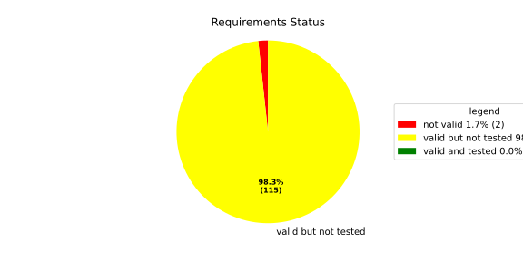
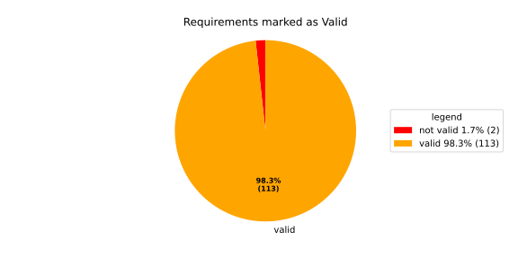
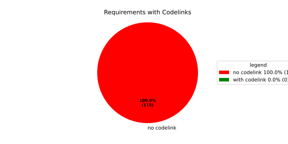

Component Requirements Statistics#
Overview#

In Detail#


No needs passed the filters
Failed Tests
Hint: This table should be empty. Before a PR can be merged all tests have to be successful.
No needs passed the filters
Skipped / Disabled Tests
No needs passed the filters
All passed Tests#
No needs passed the filters
Details About Testcases#
No needs passed the filters
No needs passed the filters
Test Log Files#
tests-report/src/health_monitoring_lib/loom_tests/test.log
exec ${PAGER:-/usr/bin/less} "$0" || exit 1
Executing tests from //src/health_monitoring_lib:loom_tests
-----------------------------------------------------------------------------
running 3 tests
test heartbeat::heartbeat_monitor::loom_tests::heartbeat_monitor_heartbeat_evaluate_too_early ... ok
test heartbeat::heartbeat_monitor::loom_tests::heartbeat_monitor_heartbeat_evaluate_in_range ... ok
test heartbeat::heartbeat_monitor::loom_tests::heartbeat_monitor_heartbeat_evaluate_too_late ... ok
test result: ok. 3 passed; 0 failed; 0 ignored; 0 measured; 0 filtered out; finished in 0.70s
tests-report/src/health_monitoring_lib/cpp_tests/test.log
exec ${PAGER:-/usr/bin/less} "$0" || exit 1
Executing tests from //src/health_monitoring_lib:cpp_tests
-----------------------------------------------------------------------------
Running main() from gmock_main.cc
[==========] Running 1 test from 1 test suite.
[----------] Global test environment set-up.
[----------] 1 test from HealthMonitorTest
[ RUN ] HealthMonitorTest.TestName
[2026/04/28 06:24:01.1786942][src/health_monitoring_lib/rust/deadline/deadline_monitor.rs:217][9511][HMON][ERROR] Deadline DeadlineTag(deadline_1) stopped too early by 100 ms
[2026/04/28 06:24:01.1830849][src/health_monitoring_lib/rust/worker.rs:121][9511][HMON][INFO] Monitoring thread started.
[2026/04/28 06:24:01.1831156][src/health_monitoring_lib/rust/worker.rs:139][9511][HMON][INFO] Monitoring thread exiting.
[ OK ] HealthMonitorTest.TestName (6 ms)
[----------] 1 test from HealthMonitorTest (6 ms total)
[----------] Global test environment tear-down
[==========] 1 test from 1 test suite ran. (7 ms total)
[ PASSED ] 1 test.
tests-report/src/health_monitoring_lib/tests/test.log
exec ${PAGER:-/usr/bin/less} "$0" || exit 1
Executing tests from //src/health_monitoring_lib:tests
-----------------------------------------------------------------------------
running 232 tests
test common::tests::time_offset_diff_too_large - should panic ... ok
test common::tests::duration_to_int_too_large - should panic ... ok
test common::tests::time_offset_valid ... ok
test common::tests::duration_to_int_valid ... ok
test common::tests::time_offset_wrong_order ... ok
test common::tests::time_range_from_interval_lower_too_large - should panic ... ok
test common::tests::time_range_from_interval_valid ... ok
test common::tests::time_range_new_valid ... ok
test common::tests::time_range_new_wrong_order - should panic ... ok
test deadline::common::tests::acquire_and_release_deadline ... ok
test deadline::common::tests::new_and_fields ... ok
test deadline::deadline_monitor::tests::deadline_outside_time_range_is_error_when_dropped_after_evaluate ... ok
test deadline::deadline_monitor::tests::get_deadline_unknown_tag ... ok
test deadline::deadline_monitor::tests::deadline_failed_on_first_run_and_then_restarted_is_evaluated_as_error ... ok
test deadline::deadline_monitor::tests::start_stop_deadline_outside_ranges_is_error_when_dropped_before_evaluate ... ok
test deadline::common::tests::concurrent_acquire ... ok
test deadline::deadline_monitor::tests::start_stop_deadline_outside_ranges_is_evaluated_as_error ... ok
test deadline::deadline_state::tests::as_u64_and_new ... ok
test deadline::deadline_state::tests::deadline_state_default_and_snapshot ... ok
test deadline::deadline_state::tests::deadline_state_update_none_returns_err ... ok
test deadline::deadline_state::tests::deadline_state_update_success ... ok
test deadline::deadline_state::tests::default_state ... ok
test deadline::deadline_state::tests::set_and_get_timestamp_ms ... ok
test deadline::deadline_state::tests::set_running ... ok
test deadline::deadline_state::tests::set_underrun ... ok
test deadline::ffi::tests::deadline_destroy_null_deadline ... ok
test deadline::ffi::tests::deadline_monitor_builder_add_deadline_invalid_range ... ok
test deadline::ffi::tests::deadline_monitor_builder_add_deadline_null_builder ... ok
test deadline::ffi::tests::deadline_monitor_builder_add_deadline_null_deadline_tag ... ok
test deadline::ffi::tests::deadline_monitor_builder_add_deadline_succeeds ... ok
test deadline::ffi::tests::deadline_monitor_builder_create_null_builder ... ok
test deadline::ffi::tests::deadline_monitor_builder_create_succeeds ... ok
test deadline::ffi::tests::deadline_monitor_builder_destroy_null_builder ... ok
test deadline::ffi::tests::deadline_monitor_destroy_null_monitor ... ok
test deadline::ffi::tests::deadline_monitor_get_deadline_null_deadline_handle ... ok
test deadline::ffi::tests::deadline_monitor_get_deadline_null_deadline_tag ... ok
test deadline::ffi::tests::deadline_monitor_get_deadline_null_monitor ... ok
test deadline::ffi::tests::deadline_monitor_get_deadline_succeeds ... ok
test deadline::ffi::tests::deadline_monitor_get_deadline_unknown_deadline ... ok
test deadline::ffi::tests::deadline_start_already_started ... ok
test deadline::ffi::tests::deadline_start_null_deadline ... ok
test deadline::ffi::tests::deadline_start_succeeds ... ok
test deadline::ffi::tests::deadline_stop_null_deadline ... ok
test deadline::ffi::tests::deadline_stop_succeeds ... ok
test ffi::tests::health_monitor_builder_add_deadline_monitor_null_deadline_monitor_builder ... ok
test ffi::tests::health_monitor_builder_add_deadline_monitor_null_hmon_builder ... ok
test ffi::tests::health_monitor_builder_add_deadline_monitor_null_monitor_tag ... ok
test ffi::tests::health_monitor_builder_add_deadline_monitor_succeeds ... ok
test ffi::tests::health_monitor_builder_add_heartbeat_monitor_null_heartbeat_monitor_builder ... ok
test ffi::tests::health_monitor_builder_add_heartbeat_monitor_null_hmon_builder ... ok
test ffi::tests::health_monitor_builder_add_heartbeat_monitor_null_monitor_tag ... ok
test ffi::tests::health_monitor_builder_add_heartbeat_monitor_succeeds ... ok
test ffi::tests::health_monitor_builder_add_logic_monitor_null_hmon_builder ... ok
test ffi::tests::health_monitor_builder_add_logic_monitor_null_logic_monitor_builder ... ok
test ffi::tests::health_monitor_builder_add_logic_monitor_null_monitor_tag ... ok
test ffi::tests::health_monitor_builder_add_logic_monitor_succeeds ... ok
test ffi::tests::health_monitor_builder_build_invalid_cycle_intervals ... ok
test ffi::tests::health_monitor_builder_build_no_monitors ... ok
test ffi::tests::health_monitor_builder_build_null_builder_handle ... ok
test ffi::tests::health_monitor_builder_build_null_monitor_handle ... ok
test ffi::tests::health_monitor_builder_build_succeeds ... ok
test ffi::tests::health_monitor_builder_build_thread_parameters ... ok
test ffi::tests::health_monitor_builder_build_valid_cycle_intervals_succeeds ... ok
test ffi::tests::health_monitor_builder_create_null_handle ... ok
test ffi::tests::health_monitor_builder_create_succeeds ... ok
test ffi::tests::health_monitor_builder_destroy_null_handle ... ok
test ffi::tests::health_monitor_destroy_null_hmon ... ok
test ffi::tests::health_monitor_get_deadline_monitor_already_taken ... ok
test ffi::tests::health_monitor_get_deadline_monitor_null_deadline_monitor ... ok
test ffi::tests::health_monitor_get_deadline_monitor_null_monitor_tag ... ok
test ffi::tests::health_monitor_get_deadline_monitor_null_hmon ... ok
test ffi::tests::health_monitor_get_deadline_monitor_succeeds ... ok
test ffi::tests::health_monitor_get_heartbeat_monitor_already_taken ... ok
test ffi::tests::health_monitor_get_heartbeat_monitor_null_heartbeat_monitor ... ok
test ffi::tests::health_monitor_get_heartbeat_monitor_null_hmon ... ok
test ffi::tests::health_monitor_get_heartbeat_monitor_null_monitor_tag ... ok
test ffi::tests::health_monitor_get_heartbeat_monitor_succeeds ... ok
test ffi::tests::health_monitor_get_logic_monitor_already_taken ... ok
test ffi::tests::health_monitor_get_logic_monitor_null_hmon ... ok
test ffi::tests::health_monitor_get_logic_monitor_null_logic_monitor ... ok
test ffi::tests::health_monitor_get_logic_monitor_null_monitor_tag ... ok
test ffi::tests::health_monitor_get_logic_monitor_succeeds ... ok
test ffi::tests::health_monitor_start_monitor_not_taken ... ok
test ffi::tests::health_monitor_start_null_hmon ... ok
[2026/04/28 06:24:01.7923605][9537][HMON][INFO] Monitoring thread started.
[2026/04/28 06:24:01.7923735][9537][HMON][INFO] Monitoring thread exiting.
test health_monitor::tests::health_monitor_builder_build_invalid_cycles ... ok
test ffi::tests::health_monitor_start_succeeds ... ok
test health_monitor::tests::health_monitor_builder_build_no_monitors ... ok
test health_monitor::tests::health_monitor_builder_build_succeeds ... ok
test health_monitor::tests::health_monitor_builder_new_succeeds ... ok
test health_monitor::tests::health_monitor_get_deadline_monitor_available ... ok
test health_monitor::tests::health_monitor_get_deadline_monitor_invalid_state ... ok
test health_monitor::tests::health_monitor_get_deadline_monitor_taken ... ok
test health_monitor::tests::health_monitor_get_heartbeat_monitor_available ... ok
test health_monitor::tests::health_monitor_get_deadline_monitor_unknown ... ok
test health_monitor::tests::health_monitor_get_heartbeat_monitor_invalid_state ... ok
test health_monitor::tests::health_monitor_get_heartbeat_monitor_taken ... ok
test health_monitor::tests::health_monitor_get_heartbeat_monitor_unknown ... ok
test health_monitor::tests::health_monitor_get_logic_monitor_invalid_state ... ok
test health_monitor::tests::health_monitor_get_logic_monitor_available ... ok
test health_monitor::tests::health_monitor_get_logic_monitor_taken ... ok
test health_monitor::tests::health_monitor_get_logic_monitor_unknown ... ok
test health_monitor::tests::health_monitor_start_monitors_not_taken - should panic ... ok
[2026/04/28 06:24:01.7938501][9537][HMON][INFO] Monitoring thread started.
test heartbeat::ffi::tests::heartbeat_monitor_builder_create_invalid_range ... ok
[2026/04/28 06:24:01.7939423][9537][HMON][INFO] Monitoring thread exiting.
test heartbeat::ffi::tests::heartbeat_monitor_builder_create_null_builder ... ok
test health_monitor::tests::health_monitor_start_succeeds ... ok
test heartbeat::ffi::tests::heartbeat_monitor_builder_create_succeeds ... ok
test heartbeat::ffi::tests::heartbeat_monitor_builder_destroy_null_builder ... ok
test heartbeat::ffi::tests::heartbeat_monitor_heartbeat_null_monitor ... ok
test heartbeat::ffi::tests::heartbeat_monitor_destroy_null_monitor ... ok
test heartbeat::ffi::tests::heartbeat_monitor_heartbeat_succeeds ... ok
test deadline::deadline_monitor::tests::monitor_with_multiple_running_deadlines ... ok
test heartbeat::heartbeat_monitor::tests::heartbeat_monitor_beat_early_evaluate_early ... ok
test heartbeat::heartbeat_monitor::tests::heartbeat_monitor_beat_early_evaluate_in_range ... ok
test heartbeat::heartbeat_monitor::tests::heartbeat_monitor_beat_in_range_evaluate_in_range ... ok
test heartbeat::heartbeat_monitor::tests::heartbeat_monitor_beat_early_evaluate_late ... ok
test heartbeat::heartbeat_monitor::tests::heartbeat_monitor_builder_build_invalid_internal_processing_cycle ... ok
test heartbeat::heartbeat_monitor::tests::heartbeat_monitor_builder_build_ok ... ok
test heartbeat::heartbeat_monitor::tests::heartbeat_monitor_beat_in_range_evaluate_late ... ok
test heartbeat::heartbeat_monitor::tests::heartbeat_monitor_beat_late_evaluate_late ... ok
test heartbeat::heartbeat_monitor::tests::heartbeat_monitor_cycle_early ... ok
test heartbeat::heartbeat_monitor::tests::heartbeat_monitor_multiple_beats_early_evaluate_early ... ok
test heartbeat::heartbeat_monitor::tests::heartbeat_monitor_cycle_in_range ... ok
test heartbeat::heartbeat_monitor::tests::heartbeat_monitor_multiple_beats_early_evaluate_in_range ... ok
test heartbeat::heartbeat_monitor::tests::heartbeat_monitor_cycle_late ... ok
test heartbeat::heartbeat_monitor::tests::heartbeat_monitor_multiple_beats_early_evaluate_late ... ok
test heartbeat::heartbeat_monitor::tests::heartbeat_monitor_multiple_beats_in_range_evaluate_in_range ... ok
test heartbeat::heartbeat_monitor::tests::heartbeat_monitor_no_beat_evaluate_early ... ok
test heartbeat::heartbeat_monitor::tests::heartbeat_monitor_no_beat_evaluate_in_range ... ok
test heartbeat::heartbeat_monitor::tests::heartbeat_monitor_multiple_beats_in_range_evaluate_late ... ok
test heartbeat::heartbeat_monitor::tests::heartbeat_monitor_multiple_beats_late_evaluate_late ... ok
test heartbeat::heartbeat_state::tests::snapshot_counter_increment ... ok
test heartbeat::heartbeat_state::tests::snapshot_default ... ok
test heartbeat::heartbeat_state::tests::snapshot_from_u64_max ... ok
test heartbeat::heartbeat_state::tests::snapshot_from_u64_valid ... ok
test heartbeat::heartbeat_state::tests::snapshot_from_u64_zero ... ok
test heartbeat::heartbeat_state::tests::snapshot_new_succeeds ... ok
test heartbeat::heartbeat_state::tests::snapshot_set_heartbeat_timestamp_out_of_range - should panic ... ok
test heartbeat::heartbeat_state::tests::snapshot_set_heartbeat_timestamp_valid ... ok
test heartbeat::heartbeat_state::tests::state_default ... ok
test heartbeat::heartbeat_state::tests::state_new ... ok
test heartbeat::heartbeat_state::tests::state_reset ... ok
test heartbeat::heartbeat_state::tests::state_snapshot ... ok
test heartbeat::heartbeat_state::tests::state_update_none ... ok
test heartbeat::heartbeat_state::tests::state_update_some ... ok
test logic::ffi::tests::logic_monitor_builder_add_state_null_allowed_states_many_elements ... ok
test logic::ffi::tests::logic_monitor_builder_add_state_null_allowed_states_zero_elements ... ok
test logic::ffi::tests::logic_monitor_builder_add_state_null_builder ... ok
test logic::ffi::tests::logic_monitor_builder_add_state_null_tag ... ok
test logic::ffi::tests::logic_monitor_builder_add_state_succeeds ... ok
test logic::ffi::tests::logic_monitor_builder_create_null_builder ... ok
test logic::ffi::tests::logic_monitor_builder_create_null_initial_state ... ok
test logic::ffi::tests::logic_monitor_builder_create_succeeds ... ok
test logic::ffi::tests::logic_monitor_builder_destroy_null_builder ... ok
test logic::ffi::tests::logic_monitor_destroy_null_monitor ... ok
test logic::ffi::tests::logic_monitor_state_fails ... ok
test logic::ffi::tests::logic_monitor_state_null_monitor ... ok
test logic::ffi::tests::logic_monitor_state_null_state ... ok
test logic::ffi::tests::logic_monitor_state_succeeds ... ok
test logic::ffi::tests::logic_monitor_transition_fails ... ok
test logic::ffi::tests::logic_monitor_transition_null_monitor ... ok
test logic::ffi::tests::logic_monitor_transition_null_target_state ... ok
test logic::ffi::tests::logic_monitor_transition_succeeds ... ok
test logic::logic_monitor::tests::logic_monitor_builder_build_no_states ... ok
test logic::logic_monitor::tests::logic_monitor_builder_build_succeeds ... ok
test logic::logic_monitor::tests::logic_monitor_builder_build_undefined_initial_state ... ok
test logic::logic_monitor::tests::logic_monitor_builder_build_undefined_target ... ok
test logic::logic_monitor::tests::logic_monitor_builder_new_succeeds ... ok
test logic::logic_monitor::tests::logic_monitor_evaluate_invalid_state ... ok
test logic::logic_monitor::tests::logic_monitor_evaluate_invalid_transition ... ok
test logic::logic_monitor::tests::logic_monitor_evaluate_succeeds ... ok
test logic::logic_monitor::tests::logic_monitor_state_indeterminate_current_state ... ok
test logic::logic_monitor::tests::logic_monitor_state_succeeds ... ok
test logic::logic_monitor::tests::logic_monitor_transition_indeterminate_current_state ... ok
test logic::logic_monitor::tests::logic_monitor_transition_invalid_transition ... ok
test logic::logic_monitor::tests::logic_monitor_transition_succeeds ... ok
test logic::logic_monitor::tests::logic_monitor_transition_unknown_node ... ok
test logic::logic_state::tests::snapshot_from_u64_max ... ok
test logic::logic_state::tests::snapshot_from_u64_valid ... ok
test logic::logic_state::tests::snapshot_from_u64_zero ... ok
test logic::logic_state::tests::snapshot_new_succeeds ... ok
test logic::logic_state::tests::snapshot_set_current_state_index_valid ... ok
test logic::logic_state::tests::snapshot_set_heartbeat_timestamp_out_of_range - should panic ... ok
test logic::logic_state::tests::snapshot_set_monitor_status_valid ... ok
test logic::logic_state::tests::state_new ... ok
test logic::logic_state::tests::state_snapshot ... ok
test logic::logic_state::tests::state_swap ... ok
test tag::tests::deadline_tag_debug ... ok
test tag::tests::deadline_tag_from_str ... ok
test tag::tests::deadline_tag_from_string ... ok
test tag::tests::deadline_tag_new ... ok
test tag::tests::deadline_tag_score_debug ... ok
test tag::tests::monitor_tag_debug ... ok
test tag::tests::monitor_tag_from_str ... ok
test tag::tests::monitor_tag_from_string ... ok
test tag::tests::monitor_tag_new ... ok
test tag::tests::monitor_tag_score_debug ... ok
test tag::tests::state_tag_debug ... ok
test tag::tests::state_tag_from_str ... ok
test tag::tests::state_tag_from_string ... ok
test tag::tests::state_tag_new ... ok
test tag::tests::state_tag_score_debug ... ok
test tag::tests::tag_debug ... ok
test tag::tests::tag_hash_is_eq ... ok
test tag::tests::tag_hash_is_ne ... ok
test tag::tests::tag_new ... ok
test tag::tests::tag_partial_eq_is_eq ... ok
test tag::tests::tag_partial_eq_is_ne ... ok
test tag::tests::tag_score_debug ... ok
test tag::tests::test_from_str ... ok
test tag::tests::test_from_string ... ok
test thread_ffi::tests::scheduler_policy_priority_max_null_priority ... ok
test thread_ffi::tests::scheduler_policy_priority_max_succeeds ... ok
test thread_ffi::tests::scheduler_policy_priority_min_null_priority ... ok
test thread_ffi::tests::scheduler_policy_priority_min_succeeds ... ok
test thread_ffi::tests::thread_parameters_affinity_null_affinity_many_elements ... ok
test thread_ffi::tests::thread_parameters_affinity_null_affinity_zero_elements ... ok
test thread_ffi::tests::thread_parameters_affinity_null_handle ... ok
test thread_ffi::tests::thread_parameters_affinity_succeeds ... ok
test thread_ffi::tests::thread_parameters_create_succeeds ... ok
test thread_ffi::tests::thread_parameters_destroy_null_handle ... ok
test thread_ffi::tests::thread_parameters_scheduler_parameters_invalid_priority ... ok
test thread_ffi::tests::thread_parameters_scheduler_parameters_null_handle ... ok
test thread_ffi::tests::thread_parameters_scheduler_parameters_succeeds ... ok
test thread_ffi::tests::thread_parameters_stack_size_null_handle ... ok
test thread_ffi::tests::thread_parameters_stack_size_succeeds ... ok
test worker::tests::monitoring_logic_report_alive_on_each_call_when_no_error ... ok
test heartbeat::heartbeat_monitor::tests::heartbeat_monitor_no_beat_evaluate_late ... ok
test worker::tests::monitoring_logic_report_error_when_deadline_failed ... ok
[2026/04/28 06:24:02.7527556][9537][HMON][INFO] Monitoring thread started.
test deadline::deadline_monitor::tests::start_stop_deadline_within_range_works ... ok
[2026/04/28 06:24:02.8131427][9537][HMON][WARN] Deadline (DeadlineTag(deadline_fast)) missed! Expected: 50, now: 60
[2026/04/28 06:24:02.8131727][9537][HMON][WARN] Deadline monitor with tag MonitorTag(deadline_monitor) reported error: TooLate.
[2026/04/28 06:24:02.8131797][9537][HMON][WARN] One or more monitors reported errors, skipping AliveAPI notification.
[2026/04/28 06:24:02.8131845][9537][HMON][INFO] Monitoring logic failed, stopping thread.
[2026/04/28 06:24:02.8131888][9537][HMON][INFO] Monitoring thread exiting.
test worker::tests::monitoring_logic_report_alive_respect_cycle ... ok
test worker::tests::unique_thread_runner_monitoring_works ... ok
test heartbeat::heartbeat_monitor::tests::heartbeat_monitor_timestamp_offset ... ok
test result: ok. 232 passed; 0 failed; 0 ignored; 0 measured; 0 filtered out; finished in 1.25s
tests-report/src/launch_manager_daemon/health_monitor_lib/Notification_UT/test.log
exec ${PAGER:-/usr/bin/less} "$0" || exit 1
Executing tests from //src/launch_manager_daemon/health_monitor_lib:Notification_UT
-----------------------------------------------------------------------------
Running main() from gmock_main.cc
[==========] Running 5 tests from 2 test suites.
[----------] Global test environment set-up.
[----------] 4 tests from NotificationWithConfigTest
[ RUN ] NotificationWithConfigTest.CanGetNotificationName
mw::log initialization error: Error No logging configuration files could be found. occurred with context information: Failed to load configuration files. Fallback to console logging.
[ OK ] NotificationWithConfigTest.CanGetNotificationName (2 ms)
[ RUN ] NotificationWithConfigTest.SendsRequestAndNeverTimesOut
[ OK ] NotificationWithConfigTest.SendsRequestAndNeverTimesOut (0 ms)
[ RUN ] NotificationWithConfigTest.TimesOutWhenSendingRequestFails
2026/05/18 09:55:30.8130052 1952080 000 ECU1 NONE Rcvy log error verbose 2 Notification (TestNotification) Failed to enqueue recovery request (ring buffer full)
[ OK ] NotificationWithConfigTest.TimesOutWhenSendingRequestFails (0 ms)
[ RUN ] NotificationWithConfigTest.ProxyInitializationFails
2026/05/18 09:55:30.8130053 1952083 000 ECU1 NONE Rcvy log error verbose 3 Notification (TestNotification) Invalid ProcessGroupState identifier: InvalidIdentifier
[ OK ] NotificationWithConfigTest.ProxyInitializationFails (0 ms)
[----------] 4 tests from NotificationWithConfigTest (3 ms total)
[----------] 1 test from NotificationWithoutConfigTest
[ RUN ] NotificationWithoutConfigTest.WatchdogNotificationGoesDirectlyToTimeout
[ OK ] NotificationWithoutConfigTest.WatchdogNotificationGoesDirectlyToTimeout (0 ms)
[----------] 1 test from NotificationWithoutConfigTest (0 ms total)
[----------] Global test environment tear-down
[==========] 5 tests from 2 test suites ran. (4 ms total)
[ PASSED ] 5 tests.
tests-report/src/launch_manager_daemon/process_state_client_lib/processstateclient_UT/test.log
exec ${PAGER:-/usr/bin/less} "$0" || exit 1
Executing tests from //src/launch_manager_daemon/process_state_client_lib:processstateclient_UT
-----------------------------------------------------------------------------
Running main() from gmock_main.cc
[==========] Running 4 tests from 1 test suite.
[----------] Global test environment set-up.
[----------] 4 tests from ProcessStateClient_UT
[ RUN ] ProcessStateClient_UT.ProcessStateClient_ConstructReceiver_Succeeds
[ OK ] ProcessStateClient_UT.ProcessStateClient_ConstructReceiver_Succeeds (0 ms)
[ RUN ] ProcessStateClient_UT.ProcessStateClient_QueueOneProcess_Succeeds
[ OK ] ProcessStateClient_UT.ProcessStateClient_QueueOneProcess_Succeeds (0 ms)
[ RUN ] ProcessStateClient_UT.ProcessStateClient_QueueMaxNumberOfProcesses_Succeeds
[ OK ] ProcessStateClient_UT.ProcessStateClient_QueueMaxNumberOfProcesses_Succeeds (12 ms)
[ RUN ] ProcessStateClient_UT.ProcessStateClient_QueueOneProcessTooMany_Fails
mw::log initialization error: Error No logging configuration files could be found. occurred with context information: Failed to load configuration files. Fallback to console logging.
2026/05/26 14:50:51.7051839 1261168 000 ECU1 NONE LM log error verbose 1 Failed to queue posix process
2026/05/26 14:50:51.7051840 1261171 000 ECU1 NONE LM log error verbose 1 ProcessStateReceiver::getNextChangedPosixProcess: Overflow occurred, will be reported as kCommunicationError
[ OK ] ProcessStateClient_UT.ProcessStateClient_QueueOneProcessTooMany_Fails (6 ms)
[----------] 4 tests from ProcessStateClient_UT (19 ms total)
[----------] Global test environment tear-down
[==========] 4 tests from 1 test suite ran. (19 ms total)
[ PASSED ] 4 tests.
tests-report/src/launch_manager_daemon/common/identifier_hash_UT/test.log
exec ${PAGER:-/usr/bin/less} "$0" || exit 1
Executing tests from //src/launch_manager_daemon/common:identifier_hash_UT
-----------------------------------------------------------------------------
Running main() from gmock_main.cc
[==========] Running 7 tests from 1 test suite.
[----------] Global test environment set-up.
[----------] 7 tests from IdentifierHashTest
[ RUN ] IdentifierHashTest.IdentifierHash_with_string_view_created
[ OK ] IdentifierHashTest.IdentifierHash_with_string_view_created (0 ms)
[ RUN ] IdentifierHashTest.IdentifierHash_with_string_created
[ OK ] IdentifierHashTest.IdentifierHash_with_string_created (0 ms)
[ RUN ] IdentifierHashTest.IdentifierHash_default_created
[ OK ] IdentifierHashTest.IdentifierHash_default_created (0 ms)
[ RUN ] IdentifierHashTest.IdentifierHash_invalid_hash_no_string_representation
[ OK ] IdentifierHashTest.IdentifierHash_invalid_hash_no_string_representation (0 ms)
[ RUN ] IdentifierHashTest.IdentifierHash_no_dangling_pointer_after_source_string_dies
[ OK ] IdentifierHashTest.IdentifierHash_no_dangling_pointer_after_source_string_dies (0 ms)
[ RUN ] IdentifierHashTest.IdentifierHash_EqualityOperators
[ OK ] IdentifierHashTest.IdentifierHash_EqualityOperators (0 ms)
[ RUN ] IdentifierHashTest.IdentifierHash_LessThanOperator
[ OK ] IdentifierHashTest.IdentifierHash_LessThanOperator (0 ms)
[----------] 7 tests from IdentifierHashTest (0 ms total)
[----------] Global test environment tear-down
[==========] 7 tests from 1 test suite ran. (0 ms total)
[ PASSED ] 7 tests.
tests-report/src/launch_manager_daemon/common/concurrency/mpmc_concurrent_queue_tsan_test/test.log
exec ${PAGER:-/usr/bin/less} "$0" || exit 1
Executing tests from //src/launch_manager_daemon/common/concurrency:mpmc_concurrent_queue_tsan_test
-----------------------------------------------------------------------------
Running main() from gmock_main.cc
[==========] Running 15 tests from 5 test suites.
[----------] Global test environment set-up.
[----------] 5 tests from MPMCConcurrentQueueTest_Basic
[ RUN ] MPMCConcurrentQueueTest_Basic.PushAndPopSingleItem
[ OK ] MPMCConcurrentQueueTest_Basic.PushAndPopSingleItem (0 ms)
[ RUN ] MPMCConcurrentQueueTest_Basic.PushAndPopPreservesOrder
[ OK ] MPMCConcurrentQueueTest_Basic.PushAndPopPreservesOrder (0 ms)
[ RUN ] MPMCConcurrentQueueTest_Basic.LvaluePushCopiesItem
[ OK ] MPMCConcurrentQueueTest_Basic.LvaluePushCopiesItem (0 ms)
[ RUN ] MPMCConcurrentQueueTest_Basic.RvaluePushWorksWithMoveOnlyType
[ OK ] MPMCConcurrentQueueTest_Basic.RvaluePushWorksWithMoveOnlyType (0 ms)
[ RUN ] MPMCConcurrentQueueTest_Basic.PopReturnsNulloptOnSemaphoreWaitFailure
[ OK ] MPMCConcurrentQueueTest_Basic.PopReturnsNulloptOnSemaphoreWaitFailure (22 ms)
[----------] 5 tests from MPMCConcurrentQueueTest_Basic (23 ms total)
[----------] 2 tests from MPMCConcurrentQueueTest_Timeout
[ RUN ] MPMCConcurrentQueueTest_Timeout.PushWithTimeoutSucceedsWhenSlotAvailable
[ OK ] MPMCConcurrentQueueTest_Timeout.PushWithTimeoutSucceedsWhenSlotAvailable (0 ms)
[ RUN ] MPMCConcurrentQueueTest_Timeout.PushWithTimeoutReturnsFalseWhenFull
[ OK ] MPMCConcurrentQueueTest_Timeout.PushWithTimeoutReturnsFalseWhenFull (21 ms)
[----------] 2 tests from MPMCConcurrentQueueTest_Timeout (22 ms total)
[----------] 3 tests from MPMCConcurrentQueueTest_Stop
[ RUN ] MPMCConcurrentQueueTest_Stop.PushReturnsFalseAfterStop
[ OK ] MPMCConcurrentQueueTest_Stop.PushReturnsFalseAfterStop (0 ms)
[ RUN ] MPMCConcurrentQueueTest_Stop.PopReturnsNulloptWhenStoppedAndEmpty
[ OK ] MPMCConcurrentQueueTest_Stop.PopReturnsNulloptWhenStoppedAndEmpty (0 ms)
[ RUN ] MPMCConcurrentQueueTest_Stop.ItemsAreDroppedAfterStop
[ OK ] MPMCConcurrentQueueTest_Stop.ItemsAreDroppedAfterStop (0 ms)
[----------] 3 tests from MPMCConcurrentQueueTest_Stop (0 ms total)
[----------] 4 tests from MPMCConcurrentQueueTest_Blocking
[ RUN ] MPMCConcurrentQueueTest_Blocking.PopBlocksUntilItemAvailable
[ OK ] MPMCConcurrentQueueTest_Blocking.PopBlocksUntilItemAvailable (0 ms)
[ RUN ] MPMCConcurrentQueueTest_Blocking.PushBlocksWhenFull
[ OK ] MPMCConcurrentQueueTest_Blocking.PushBlocksWhenFull (0 ms)
[ RUN ] MPMCConcurrentQueueTest_Blocking.StopUnblocksBlockedConsumer
[ OK ] MPMCConcurrentQueueTest_Blocking.StopUnblocksBlockedConsumer (0 ms)
[ RUN ] MPMCConcurrentQueueTest_Blocking.StopUnblocksBlockedProducer
[ OK ] MPMCConcurrentQueueTest_Blocking.StopUnblocksBlockedProducer (0 ms)
[----------] 4 tests from MPMCConcurrentQueueTest_Blocking (1 ms total)
[----------] 1 test from MPMCConcurrentQueueTest_MPMC
[ RUN ] MPMCConcurrentQueueTest_MPMC.AllItemsDelivered
[ OK ] MPMCConcurrentQueueTest_MPMC.AllItemsDelivered (6 ms)
[----------] 1 test from MPMCConcurrentQueueTest_MPMC (6 ms total)
[----------] Global test environment tear-down
[==========] 15 tests from 5 test suites ran. (55 ms total)
[ PASSED ] 15 tests.
tests-report/src/launch_manager_daemon/common/concurrency/mpmc_concurrent_queue_test/test.log
exec ${PAGER:-/usr/bin/less} "$0" || exit 1
Executing tests from //src/launch_manager_daemon/common/concurrency:mpmc_concurrent_queue_test
-----------------------------------------------------------------------------
Running main() from gmock_main.cc
[==========] Running 15 tests from 5 test suites.
[----------] Global test environment set-up.
[----------] 5 tests from MPMCConcurrentQueueTest_Basic
[ RUN ] MPMCConcurrentQueueTest_Basic.PushAndPopSingleItem
[ OK ] MPMCConcurrentQueueTest_Basic.PushAndPopSingleItem (0 ms)
[ RUN ] MPMCConcurrentQueueTest_Basic.PushAndPopPreservesOrder
[ OK ] MPMCConcurrentQueueTest_Basic.PushAndPopPreservesOrder (0 ms)
[ RUN ] MPMCConcurrentQueueTest_Basic.LvaluePushCopiesItem
[ OK ] MPMCConcurrentQueueTest_Basic.LvaluePushCopiesItem (0 ms)
[ RUN ] MPMCConcurrentQueueTest_Basic.RvaluePushWorksWithMoveOnlyType
[ OK ] MPMCConcurrentQueueTest_Basic.RvaluePushWorksWithMoveOnlyType (0 ms)
[ RUN ] MPMCConcurrentQueueTest_Basic.PopReturnsNulloptOnSemaphoreWaitFailure
[ OK ] MPMCConcurrentQueueTest_Basic.PopReturnsNulloptOnSemaphoreWaitFailure (23 ms)
[----------] 5 tests from MPMCConcurrentQueueTest_Basic (23 ms total)
[----------] 2 tests from MPMCConcurrentQueueTest_Timeout
[ RUN ] MPMCConcurrentQueueTest_Timeout.PushWithTimeoutSucceedsWhenSlotAvailable
[ OK ] MPMCConcurrentQueueTest_Timeout.PushWithTimeoutSucceedsWhenSlotAvailable (0 ms)
[ RUN ] MPMCConcurrentQueueTest_Timeout.PushWithTimeoutReturnsFalseWhenFull
[ OK ] MPMCConcurrentQueueTest_Timeout.PushWithTimeoutReturnsFalseWhenFull (21 ms)
[----------] 2 tests from MPMCConcurrentQueueTest_Timeout (21 ms total)
[----------] 3 tests from MPMCConcurrentQueueTest_Stop
[ RUN ] MPMCConcurrentQueueTest_Stop.PushReturnsFalseAfterStop
[ OK ] MPMCConcurrentQueueTest_Stop.PushReturnsFalseAfterStop (0 ms)
[ RUN ] MPMCConcurrentQueueTest_Stop.PopReturnsNulloptWhenStoppedAndEmpty
[ OK ] MPMCConcurrentQueueTest_Stop.PopReturnsNulloptWhenStoppedAndEmpty (0 ms)
[ RUN ] MPMCConcurrentQueueTest_Stop.ItemsAreDroppedAfterStop
[ OK ] MPMCConcurrentQueueTest_Stop.ItemsAreDroppedAfterStop (0 ms)
[----------] 3 tests from MPMCConcurrentQueueTest_Stop (0 ms total)
[----------] 4 tests from MPMCConcurrentQueueTest_Blocking
[ RUN ] MPMCConcurrentQueueTest_Blocking.PopBlocksUntilItemAvailable
[ OK ] MPMCConcurrentQueueTest_Blocking.PopBlocksUntilItemAvailable (0 ms)
[ RUN ] MPMCConcurrentQueueTest_Blocking.PushBlocksWhenFull
[ OK ] MPMCConcurrentQueueTest_Blocking.PushBlocksWhenFull (0 ms)
[ RUN ] MPMCConcurrentQueueTest_Blocking.StopUnblocksBlockedConsumer
[ OK ] MPMCConcurrentQueueTest_Blocking.StopUnblocksBlockedConsumer (0 ms)
[ RUN ] MPMCConcurrentQueueTest_Blocking.StopUnblocksBlockedProducer
[ OK ] MPMCConcurrentQueueTest_Blocking.StopUnblocksBlockedProducer (0 ms)
[----------] 4 tests from MPMCConcurrentQueueTest_Blocking (1 ms total)
[----------] 1 test from MPMCConcurrentQueueTest_MPMC
[ RUN ] MPMCConcurrentQueueTest_MPMC.AllItemsDelivered
[ OK ] MPMCConcurrentQueueTest_MPMC.AllItemsDelivered (4 ms)
[----------] 1 test from MPMCConcurrentQueueTest_MPMC (4 ms total)
[----------] Global test environment tear-down
[==========] 15 tests from 5 test suites ran. (51 ms total)
[ PASSED ] 15 tests.
tests-report/src/launch_manager_daemon/recovery_client_lib/recovery_client_UT/test.log
exec ${PAGER:-/usr/bin/less} "$0" || exit 1
Executing tests from //src/launch_manager_daemon/recovery_client_lib:recovery_client_UT
-----------------------------------------------------------------------------
Running main() from gmock_main.cc
[==========] Running 5 tests from 1 test suite.
[----------] Global test environment set-up.
[----------] 5 tests from RecoveryClientTest
[ RUN ] RecoveryClientTest.SendSingleRequest
[ OK ] RecoveryClientTest.SendSingleRequest (0 ms)
[ RUN ] RecoveryClientTest.GetNextRequest
[ OK ] RecoveryClientTest.GetNextRequest (0 ms)
[ RUN ] RecoveryClientTest.GetNextRequestEmpty
[ OK ] RecoveryClientTest.GetNextRequestEmpty (0 ms)
[ RUN ] RecoveryClientTest.RingBufferFull
[ OK ] RecoveryClientTest.RingBufferFull (0 ms)
[ RUN ] RecoveryClientTest.FIFOOrdering
[ OK ] RecoveryClientTest.FIFOOrdering (0 ms)
[----------] 5 tests from RecoveryClientTest (0 ms total)
[----------] Global test environment tear-down
[==========] 5 tests from 1 test suite ran. (0 ms total)
[ PASSED ] 5 tests.
tests-report/tests/integration/complex_monitoring/complex_monitoring/test.log
exec ${PAGER:-/usr/bin/less} "$0" || exit 1
Executing tests from //tests/integration/complex_monitoring:complex_monitoring
-----------------------------------------------------------------------------
============================= test session starts ==============================
platform linux -- Python 3.12.12, pytest-9.0.3, pluggy-1.5.0
rootdir: /home/runner/.bazel/sandbox/processwrapper-sandbox/867/execroot/_main/bazel-out/k8-fastbuild/bin/tests/integration/complex_monitoring/complex_monitoring.runfiles/score_itf+
configfile: pytest.ini
collected 1 item
../score_itf+::test_complex_monitoring
-------------------------------- live log setup --------------------------------
[2026-05-26 14:51:02.001] [INFO] [score.itf.plugins.docker] Executing custom image bootstrap command: tests/utils/environments/x86_64-linux/x86_64-linux.sh
[2026-05-26 14:51:02.155] [DEBUG] [docker.utils.config] Trying paths: ['/home/runner/.docker/config.json', '/home/runner/.dockercfg']
[2026-05-26 14:51:02.155] [DEBUG] [docker.utils.config] Found file at path: /home/runner/.docker/config.json
[2026-05-26 14:51:02.155] [DEBUG] [docker.auth] Found 'auths' section
[2026-05-26 14:51:02.156] [DEBUG] [docker.auth] Found entry (registry='https://index.docker.io/v1/', username='githubactions')
[2026-05-26 14:51:02.166] [DEBUG] [urllib3.connectionpool] http://localhost:None "GET /version HTTP/1.1" 200 823
[2026-05-26 14:51:02.203] [DEBUG] [urllib3.connectionpool] http://localhost:None "POST /v1.48/containers/create HTTP/1.1" 201 88
[2026-05-26 14:51:02.204] [DEBUG] [urllib3.connectionpool] http://localhost:None "GET /v1.48/containers/15fe113fda8ed39ec26eea7d0a45fefbc15772f1a3bfa1c542a768544b5dde3c/json HTTP/1.1" 200 None
[2026-05-26 14:51:02.334] [DEBUG] [urllib3.connectionpool] http://localhost:None "POST /v1.48/containers/15fe113fda8ed39ec26eea7d0a45fefbc15772f1a3bfa1c542a768544b5dde3c/start HTTP/1.1" 204 0
[2026-05-26 14:51:02.335] [DEBUG] [docker.utils.config] Trying paths: ['/home/runner/.docker/config.json', '/home/runner/.dockercfg']
[2026-05-26 14:51:02.335] [DEBUG] [docker.utils.config] Found file at path: /home/runner/.docker/config.json
[2026-05-26 14:51:02.335] [DEBUG] [docker.auth] Found 'auths' section
[2026-05-26 14:51:02.335] [DEBUG] [docker.auth] Found entry (registry='https://index.docker.io/v1/', username='githubactions')
[2026-05-26 14:51:02.346] [DEBUG] [urllib3.connectionpool] http://localhost:None "GET /version HTTP/1.1" 200 823
[2026-05-26 14:51:02.348] [DEBUG] [urllib3.connectionpool] http://localhost:None "POST /v1.48/containers/15fe113fda8ed39ec26eea7d0a45fefbc15772f1a3bfa1c542a768544b5dde3c/exec HTTP/1.1" 201 74
[2026-05-26 14:51:02.353] [DEBUG] [urllib3.connectionpool] http://localhost:None "POST /v1.48/exec/7b87c5ad64e946e7d870d6a65d8b18d89761480a3485e8f28e1327327fa144b8/start HTTP/1.1" 101 0
[2026-05-26 14:51:02.396] [DEBUG] [urllib3.connectionpool] http://localhost:None "GET /v1.48/exec/7b87c5ad64e946e7d870d6a65d8b18d89761480a3485e8f28e1327327fa144b8/json HTTP/1.1" 200 390
[2026-05-26 14:51:02.448] [DEBUG] [urllib3.connectionpool] http://localhost:None "PUT /v1.48/containers/15fe113fda8ed39ec26eea7d0a45fefbc15772f1a3bfa1c542a768544b5dde3c/archive?path=%2Ftmp HTTP/1.1" 200 0
[2026-05-26 14:51:02.450] [DEBUG] [urllib3.connectionpool] http://localhost:None "POST /v1.48/containers/15fe113fda8ed39ec26eea7d0a45fefbc15772f1a3bfa1c542a768544b5dde3c/exec HTTP/1.1" 201 74
[2026-05-26 14:51:02.451] [DEBUG] [urllib3.connectionpool] http://localhost:None "POST /v1.48/exec/06bae14d7e2025438effff5294d4b21282d86d0ccbefa788b66fd8c12c36ad35/start HTTP/1.1" 101 0
[2026-05-26 14:51:02.525] [DEBUG] [urllib3.connectionpool] http://localhost:None "GET /v1.48/exec/06bae14d7e2025438effff5294d4b21282d86d0ccbefa788b66fd8c12c36ad35/json HTTP/1.1" 200 429
[2026-05-26 14:51:02.525] [INFO] [tests.utils.testing_utils.setup_test] Test case setup finished
-------------------------------- live log call ---------------------------------
[2026-05-26 14:51:02.527] [DEBUG] [urllib3.connectionpool] http://localhost:None "POST /v1.48/containers/15fe113fda8ed39ec26eea7d0a45fefbc15772f1a3bfa1c542a768544b5dde3c/exec HTTP/1.1" 201 74
[2026-05-26 14:51:02.528] [DEBUG] [urllib3.connectionpool] http://localhost:None "POST /v1.48/exec/d3959ffe9da1744dac3501eab2cf3fcf3fb31a6ac699f09303dcd43b147dde2e/start HTTP/1.1" 101 0
[2026-05-26 14:51:02.586] [DEBUG] [urllib3.connectionpool] http://localhost:None "GET /v1.48/exec/d3959ffe9da1744dac3501eab2cf3fcf3fb31a6ac699f09303dcd43b147dde2e/json HTTP/1.1" 200 404
[2026-05-26 14:51:02.588] [DEBUG] [urllib3.connectionpool] http://localhost:None "POST /v1.48/containers/15fe113fda8ed39ec26eea7d0a45fefbc15772f1a3bfa1c542a768544b5dde3c/exec HTTP/1.1" 201 74
[2026-05-26 14:51:02.589] [DEBUG] [urllib3.connectionpool] http://localhost:None "POST /v1.48/exec/9403ff33aec4fb9f574b6f2afd3f0dc9765eba8427e50bbb528b7e6b6a32c3d7/start HTTP/1.1" 101 0
[2026-05-26 14:51:02.647] [INFO] [launch_manager] mw::log initialization error: Error No logging configuration files could be found. occurred with context information: Failed to load configuration files. Fallback to console logging.
[2026-05-26 14:51:02.647] [INFO] [launch_manager] 2026/05/26 14:51:02.7062645 1369222 000 ECU1 NONE Fcty log warn verbose 2 Factory for FlatCfg MachineConfig: No watchdog configured
[2026-05-26 14:51:02.647] [DEBUG] [urllib3.connectionpool] http://localhost:None "GET /v1.48/exec/9403ff33aec4fb9f574b6f2afd3f0dc9765eba8427e50bbb528b7e6b6a32c3d7/json HTTP/1.1" 200 455
[2026-05-26 14:51:02.649] [DEBUG] [urllib3.connectionpool] http://localhost:None "POST /v1.48/containers/15fe113fda8ed39ec26eea7d0a45fefbc15772f1a3bfa1c542a768544b5dde3c/exec HTTP/1.1" 201 74
[2026-05-26 14:51:02.651] [INFO] [launch_manager] [==========] Running 1 test from 1 test suite.
[2026-05-26 14:51:02.652] [INFO] [launch_manager] [----------] Global test environment set-up.
[2026-05-26 14:51:02.652] [INFO] [launch_manager] [----------] 1 test from ComplexMonitoring
[2026-05-26 14:51:02.652] [INFO] [launch_manager] [ RUN ] ComplexMonitoring.ControlClientMock
[2026-05-26 14:51:02.652] [DEBUG] [urllib3.connectionpool] http://localhost:None "POST /v1.48/exec/310581b5d0543ccff4bd753f84e5efc98204ec597a4ae499a31e706471569b31/start HTTP/1.1" 101 0
[2026-05-26 14:51:02.653] [INFO] [launch_manager] [ STEP ] Report kRunning
[2026-05-26 14:51:02.654] [INFO] [launch_manager] [ END STEP ] Report kRunning
[2026-05-26 14:51:02.701] [DEBUG] [urllib3.connectionpool] http://localhost:None "GET /v1.48/exec/310581b5d0543ccff4bd753f84e5efc98204ec597a4ae499a31e706471569b31/json HTTP/1.1" 200 404
[2026-05-26 14:51:02.702] [DEBUG] [tests.utils.testing_utils.run_until_file_deployed] Waiting for /tmp/tests/test_end
[2026-05-26 14:51:03.204] [DEBUG] [urllib3.connectionpool] http://localhost:None "GET /v1.48/exec/9403ff33aec4fb9f574b6f2afd3f0dc9765eba8427e50bbb528b7e6b6a32c3d7/json HTTP/1.1" 200 455
[2026-05-26 14:51:03.205] [DEBUG] [urllib3.connectionpool] http://localhost:None "POST /v1.48/containers/15fe113fda8ed39ec26eea7d0a45fefbc15772f1a3bfa1c542a768544b5dde3c/exec HTTP/1.1" 201 74
[2026-05-26 14:51:03.206] [DEBUG] [urllib3.connectionpool] http://localhost:None "POST /v1.48/exec/2e1be0f89fa3854e3395e941f09bca8f49204e5788c402b1c274658309ff8312/start HTTP/1.1" 101 0
[2026-05-26 14:51:03.240] [DEBUG] [urllib3.connectionpool] http://localhost:None "GET /v1.48/exec/2e1be0f89fa3854e3395e941f09bca8f49204e5788c402b1c274658309ff8312/json HTTP/1.1" 200 404
[2026-05-26 14:51:03.240] [DEBUG] [tests.utils.testing_utils.run_until_file_deployed] Waiting for /tmp/tests/test_end
[2026-05-26 14:51:03.655] [INFO] [launch_manager] [ STEP ] Launch monitored process
[2026-05-26 14:51:03.655] [INFO] [launch_manager] mw::log initialization error: Error No logging configuration files could be found. occurred with context information: Failed to load configuration files. Fallback to console logging.
[2026-05-26 14:51:03.658] [INFO] [launch_manager] [==========] Running 1 test from 1 test suite.
[2026-05-26 14:51:03.658] [INFO] [launch_manager] [----------] Global test environment set-up.
[2026-05-26 14:51:03.658] [INFO] [launch_manager] [----------] 1 test from ComplexMonitoring
[2026-05-26 14:51:03.658] [INFO] [launch_manager] [ RUN ] ComplexMonitoring.ComponentComplexMonitoring
[2026-05-26 14:51:03.658] [INFO] [launch_manager] [2026/05/26 14:51:03.6584891][81][HMON][DEBUG] ScoreSupervisorAPIClient: Creating with IDENTIFIER=component_complex_monitoring
[2026-05-26 14:51:03.659] [INFO] [launch_manager] mw::log initialization error: Error No logging configuration files could be found. occurred with context information: Failed to load configuration files. Fallback to console logging.
[2026-05-26 14:51:03.659] [INFO] [launch_manager] [ STEP ] Report kRunning
[2026-05-26 14:51:03.659] [INFO] [launch_manager] [2026/05/26 14:51:03.6588676][81][HMON][INFO] Monitoring thread started.
[2026-05-26 14:51:03.661] [INFO] [launch_manager] [ END STEP ] Report kRunning
[2026-05-26 14:51:03.661] [INFO] [launch_manager] [ STEP ] Send heartbeats for 1 second
[2026-05-26 14:51:03.741] [DEBUG] [urllib3.connectionpool] http://localhost:None "GET /v1.48/exec/9403ff33aec4fb9f574b6f2afd3f0dc9765eba8427e50bbb528b7e6b6a32c3d7/json HTTP/1.1" 200 455
[2026-05-26 14:51:03.742] [DEBUG] [urllib3.connectionpool] http://localhost:None "POST /v1.48/containers/15fe113fda8ed39ec26eea7d0a45fefbc15772f1a3bfa1c542a768544b5dde3c/exec HTTP/1.1" 201 74
[2026-05-26 14:51:03.743] [DEBUG] [urllib3.connectionpool] http://localhost:None "POST /v1.48/exec/b1f7de08d9b1c295f6ee2e6ccbde4c17cf77652affcbeb27200cb3e0ed4a2c33/start HTTP/1.1" 101 0
[2026-05-26 14:51:03.753] [INFO] [launch_manager] [ END STEP ] Launch monitored process
[2026-05-26 14:51:03.777] [DEBUG] [urllib3.connectionpool] http://localhost:None "GET /v1.48/exec/b1f7de08d9b1c295f6ee2e6ccbde4c17cf77652affcbeb27200cb3e0ed4a2c33/json HTTP/1.1" 200 404
[2026-05-26 14:51:03.778] [DEBUG] [tests.utils.testing_utils.run_until_file_deployed] Waiting for /tmp/tests/test_end
[2026-05-26 14:51:04.279] [DEBUG] [urllib3.connectionpool] http://localhost:None "GET /v1.48/exec/9403ff33aec4fb9f574b6f2afd3f0dc9765eba8427e50bbb528b7e6b6a32c3d7/json HTTP/1.1" 200 455
[2026-05-26 14:51:04.280] [DEBUG] [urllib3.connectionpool] http://localhost:None "POST /v1.48/containers/15fe113fda8ed39ec26eea7d0a45fefbc15772f1a3bfa1c542a768544b5dde3c/exec HTTP/1.1" 201 74
[2026-05-26 14:51:04.282] [DEBUG] [urllib3.connectionpool] http://localhost:None "POST /v1.48/exec/68f76442983ccbe8249574f9888c97256c6b261da1d5bea76489ef790306bd1f/start HTTP/1.1" 101 0
[2026-05-26 14:51:04.341] [DEBUG] [urllib3.connectionpool] http://localhost:None "GET /v1.48/exec/68f76442983ccbe8249574f9888c97256c6b261da1d5bea76489ef790306bd1f/json HTTP/1.1" 200 404
[2026-05-26 14:51:04.341] [DEBUG] [tests.utils.testing_utils.run_until_file_deployed] Waiting for /tmp/tests/test_end
[2026-05-26 14:51:04.712] [INFO] [launch_manager] [ END STEP ] Send heartbeats for 1 second
[2026-05-26 14:51:04.761] [INFO] [launch_manager] [2026/05/26 14:51:04.7608812][81][HMON][INFO] Monitoring thread exiting.
[2026-05-26 14:51:04.761] [INFO] [launch_manager] [ OK ] ComplexMonitoring.ComponentComplexMonitoring (1102 ms)
[2026-05-26 14:51:04.762] [INFO] [launch_manager] [----------] 1 test from ComplexMonitoring (1102 ms total)
[2026-05-26 14:51:04.762] [INFO] [launch_manager] [----------] Global test environment tear-down
[2026-05-26 14:51:04.762] [INFO] [launch_manager] [==========] 1 test from 1 test suite ran. (1102 ms total)
[2026-05-26 14:51:04.762] [INFO] [launch_manager] [ PASSED ] 1 test.
[2026-05-26 14:51:04.843] [DEBUG] [urllib3.connectionpool] http://localhost:None "GET /v1.48/exec/9403ff33aec4fb9f574b6f2afd3f0dc9765eba8427e50bbb528b7e6b6a32c3d7/json HTTP/1.1" 200 455
[2026-05-26 14:51:04.844] [DEBUG] [urllib3.connectionpool] http://localhost:None "POST /v1.48/containers/15fe113fda8ed39ec26eea7d0a45fefbc15772f1a3bfa1c542a768544b5dde3c/exec HTTP/1.1" 201 74
[2026-05-26 14:51:04.846] [DEBUG] [urllib3.connectionpool] http://localhost:None "POST /v1.48/exec/1e3a507581b100144172493d0bb168850a579cee9328c5bc11299da95e9fdabe/start HTTP/1.1" 101 0
[2026-05-26 14:51:04.900] [INFO] [launch_manager] 2026/05/26 14:51:04.7064897 1391748 000 ECU1 NONE Sprv log warn verbose 13 Alive Supervision ( component_complex_monitoring_alive_supervision ) switched to EXPIRED , due to 0 reported alive indication(s) (expected >= 1 ). Failed supervision cycles: 0 / 0
[2026-05-26 14:51:04.901] [INFO] [launch_manager] 2026/05/26 14:51:04.7064898 1391751 000 ECU1 NONE Sprv log warn verbose 3 Local Supervision ( component_complex_monitoring_local_supervision ) switched to EXPIRED, due to expired Alive Supervision.
[2026-05-26 14:51:04.902] [INFO] [launch_manager] 2026/05/26 14:51:04.7064898 1391754 000 ECU1 NONE Sprv log warn verbose 3 Global Supervision ( global_supervision ) switched to STOPPED due to expired supervision tolerance.
[2026-05-26 14:51:04.900] [DEBUG] [urllib3.connectionpool] http://localhost:None "GET /v1.48/exec/1e3a507581b100144172493d0bb168850a579cee9328c5bc11299da95e9fdabe/json HTTP/1.1" 200 404
[2026-05-26 14:51:04.902] [DEBUG] [tests.utils.testing_utils.run_until_file_deployed] Waiting for /tmp/tests/test_end
[2026-05-26 14:51:05.257] [INFO] [launch_manager] 2026/05/26 14:51:05.7065256 1395336 000 ECU1 NONE LM log warn verbose 5 Process 1 ( component_complex_monitoring ) did not respond to SIGTERM, sending SIGKILL
[2026-05-26 14:51:05.404] [DEBUG] [urllib3.connectionpool] http://localhost:None "GET /v1.48/exec/9403ff33aec4fb9f574b6f2afd3f0dc9765eba8427e50bbb528b7e6b6a32c3d7/json HTTP/1.1" 200 455
[2026-05-26 14:51:05.405] [DEBUG] [urllib3.connectionpool] http://localhost:None "POST /v1.48/containers/15fe113fda8ed39ec26eea7d0a45fefbc15772f1a3bfa1c542a768544b5dde3c/exec HTTP/1.1" 201 74
[2026-05-26 14:51:05.406] [DEBUG] [urllib3.connectionpool] http://localhost:None "POST /v1.48/exec/282075aa1708d21deaa0ddb02a07201b0e6784d7dcf608c4a70111b60df8dc95/start HTTP/1.1" 101 0
[2026-05-26 14:51:05.449] [DEBUG] [urllib3.connectionpool] http://localhost:None "GET /v1.48/exec/282075aa1708d21deaa0ddb02a07201b0e6784d7dcf608c4a70111b60df8dc95/json HTTP/1.1" 200 404
[2026-05-26 14:51:05.450] [DEBUG] [tests.utils.testing_utils.run_until_file_deployed] Waiting for /tmp/tests/test_end
[2026-05-26 14:51:05.753] [INFO] [launch_manager] [ STEP ] Verify state changed to fallback run target
[2026-05-26 14:51:05.754] [INFO] [launch_manager] [ END STEP ] Verify state changed to fallback run target
[2026-05-26 14:51:05.754] [INFO] [launch_manager] [ STEP ] Activate Off run target
[2026-05-26 14:51:05.754] [INFO] [launch_manager] [ END STEP ] Activate Off run target
[2026-05-26 14:51:05.759] [INFO] [launch_manager] [ OK ] ComplexMonitoring.ControlClientMock (3107 ms)
[2026-05-26 14:51:05.759] [INFO] [launch_manager] [----------] 1 test from ComplexMonitoring (3107 ms total)
[2026-05-26 14:51:05.759] [INFO] [launch_manager] [----------] Global test environment tear-down
[2026-05-26 14:51:05.759] [INFO] [launch_manager] [==========] 1 test from 1 test suite ran. (3107 ms total)
[2026-05-26 14:51:05.759] [INFO] [launch_manager] [ PASSED ] 1 test.
[2026-05-26 14:51:05.951] [DEBUG] [urllib3.connectionpool] http://localhost:None "GET /v1.48/exec/9403ff33aec4fb9f574b6f2afd3f0dc9765eba8427e50bbb528b7e6b6a32c3d7/json HTTP/1.1" 200 455
[2026-05-26 14:51:05.952] [DEBUG] [urllib3.connectionpool] http://localhost:None "POST /v1.48/containers/15fe113fda8ed39ec26eea7d0a45fefbc15772f1a3bfa1c542a768544b5dde3c/exec HTTP/1.1" 201 74
[2026-05-26 14:51:05.953] [DEBUG] [urllib3.connectionpool] http://localhost:None "POST /v1.48/exec/3137c5f44d425eddf49de797fd9b6bc37574529d8210a79edb67be195d434ed4/start HTTP/1.1" 101 0
[2026-05-26 14:51:06.000] [DEBUG] [urllib3.connectionpool] http://localhost:None "GET /v1.48/exec/3137c5f44d425eddf49de797fd9b6bc37574529d8210a79edb67be195d434ed4/json HTTP/1.1" 200 404
[2026-05-26 14:51:06.001] [DEBUG] [urllib3.connectionpool] http://localhost:None "POST /v1.48/containers/15fe113fda8ed39ec26eea7d0a45fefbc15772f1a3bfa1c542a768544b5dde3c/exec HTTP/1.1" 201 74
[2026-05-26 14:51:06.002] [DEBUG] [urllib3.connectionpool] http://localhost:None "POST /v1.48/exec/08e1684c65e57e21198df685815f1a9fc6c6b085fa11b3e1f9ed3e8b93f3032b/start HTTP/1.1" 101 0
[2026-05-26 14:51:06.048] [DEBUG] [urllib3.connectionpool] http://localhost:None "GET /v1.48/exec/08e1684c65e57e21198df685815f1a9fc6c6b085fa11b3e1f9ed3e8b93f3032b/json HTTP/1.1" 200 389
[2026-05-26 14:51:06.550] [DEBUG] [urllib3.connectionpool] http://localhost:None "GET /v1.48/exec/9403ff33aec4fb9f574b6f2afd3f0dc9765eba8427e50bbb528b7e6b6a32c3d7/json HTTP/1.1" 200 453
[2026-05-26 14:51:06.551] [DEBUG] [urllib3.connectionpool] http://localhost:None "POST /v1.48/containers/15fe113fda8ed39ec26eea7d0a45fefbc15772f1a3bfa1c542a768544b5dde3c/exec HTTP/1.1" 201 74
[2026-05-26 14:51:06.552] [DEBUG] [urllib3.connectionpool] http://localhost:None "POST /v1.48/exec/163a75e6801d1e77dbd6a23b72dd4c2ece591e449dd3111dc416ecb43829ddb9/start HTTP/1.1" 101 0
[2026-05-26 14:51:06.587] [DEBUG] [urllib3.connectionpool] http://localhost:None "GET /v1.48/exec/163a75e6801d1e77dbd6a23b72dd4c2ece591e449dd3111dc416ecb43829ddb9/json HTTP/1.1" 200 415
[2026-05-26 14:51:06.589] [DEBUG] [urllib3.connectionpool] http://localhost:None "GET /v1.48/containers/15fe113fda8ed39ec26eea7d0a45fefbc15772f1a3bfa1c542a768544b5dde3c/archive?path=%2Ftmp%2Ftests%2Fcomplex_monitoring%2Fcomponent_complex_monitoring.xml HTTP/1.1" 200 None
[2026-05-26 14:51:06.592] [DEBUG] [urllib3.connectionpool] http://localhost:None "POST /v1.48/containers/15fe113fda8ed39ec26eea7d0a45fefbc15772f1a3bfa1c542a768544b5dde3c/exec HTTP/1.1" 201 74
[2026-05-26 14:51:06.593] [DEBUG] [urllib3.connectionpool] http://localhost:None "POST /v1.48/exec/588c851997434b55824654fd3d8bcf29260c286b853ef9b8c3a7f65cafc84596/start HTTP/1.1" 101 0
[2026-05-26 14:51:06.630] [DEBUG] [urllib3.connectionpool] http://localhost:None "GET /v1.48/exec/588c851997434b55824654fd3d8bcf29260c286b853ef9b8c3a7f65cafc84596/json HTTP/1.1" 200 442
[2026-05-26 14:51:06.633] [DEBUG] [urllib3.connectionpool] http://localhost:None "GET /v1.48/containers/15fe113fda8ed39ec26eea7d0a45fefbc15772f1a3bfa1c542a768544b5dde3c/archive?path=%2Ftmp%2Ftests%2Fcomplex_monitoring%2Fcontrol_client_mock.xml HTTP/1.1" 200 None
[2026-05-26 14:51:06.634] [DEBUG] [urllib3.connectionpool] http://localhost:None "POST /v1.48/containers/15fe113fda8ed39ec26eea7d0a45fefbc15772f1a3bfa1c542a768544b5dde3c/exec HTTP/1.1" 201 74
[2026-05-26 14:51:06.636] [DEBUG] [urllib3.connectionpool] http://localhost:None "POST /v1.48/exec/9218db7509a70c019e2f662f2e954a2b9916b008c2dd705ef01c0190c200d558/start HTTP/1.1" 101 0
[2026-05-26 14:51:06.673] [DEBUG] [urllib3.connectionpool] http://localhost:None "GET /v1.48/exec/9218db7509a70c019e2f662f2e954a2b9916b008c2dd705ef01c0190c200d558/json HTTP/1.1" 200 433
PASSED [100%]
------------------------------ live log teardown -------------------------------
[2026-05-26 14:51:06.794] [DEBUG] [urllib3.connectionpool] http://localhost:None "POST /v1.48/containers/15fe113fda8ed39ec26eea7d0a45fefbc15772f1a3bfa1c542a768544b5dde3c/stop?t=1 HTTP/1.1" 204 0
[2026-05-26 14:51:06.812] [DEBUG] [urllib3.connectionpool] http://localhost:None "DELETE /v1.48/containers/15fe113fda8ed39ec26eea7d0a45fefbc15772f1a3bfa1c542a768544b5dde3c?v=False&link=False&force=True HTTP/1.1" 204 0
- generated xml file: /home/runner/.bazel/sandbox/processwrapper-sandbox/867/execroot/_main/bazel-out/k8-fastbuild/testlogs/tests/integration/complex_monitoring/complex_monitoring/test.xml -
============================== 1 passed in 4.84s ===============================
tests-report/tests/integration/crash_on_startup/crash_on_startup/test.log
exec ${PAGER:-/usr/bin/less} "$0" || exit 1
Executing tests from //tests/integration/crash_on_startup:crash_on_startup
-----------------------------------------------------------------------------
============================= test session starts ==============================
platform linux -- Python 3.12.12, pytest-9.0.3, pluggy-1.5.0
rootdir: /home/runner/.bazel/sandbox/processwrapper-sandbox/869/execroot/_main/bazel-out/k8-fastbuild/bin/tests/integration/crash_on_startup/crash_on_startup.runfiles/score_itf+
configfile: pytest.ini
collected 1 item
../score_itf+::test_crash_on_startup
-------------------------------- live log setup --------------------------------
[2026-05-26 14:51:02.287] [INFO] [score.itf.plugins.docker] Executing custom image bootstrap command: tests/utils/environments/x86_64-linux/x86_64-linux.sh
[2026-05-26 14:51:02.446] [DEBUG] [docker.utils.config] Trying paths: ['/home/runner/.docker/config.json', '/home/runner/.dockercfg']
[2026-05-26 14:51:02.446] [DEBUG] [docker.utils.config] Found file at path: /home/runner/.docker/config.json
[2026-05-26 14:51:02.446] [DEBUG] [docker.auth] Found 'auths' section
[2026-05-26 14:51:02.446] [DEBUG] [docker.auth] Found entry (registry='https://index.docker.io/v1/', username='githubactions')
[2026-05-26 14:51:02.456] [DEBUG] [urllib3.connectionpool] http://localhost:None "GET /version HTTP/1.1" 200 823
[2026-05-26 14:51:02.500] [DEBUG] [urllib3.connectionpool] http://localhost:None "POST /v1.48/containers/create HTTP/1.1" 201 88
[2026-05-26 14:51:02.502] [DEBUG] [urllib3.connectionpool] http://localhost:None "GET /v1.48/containers/01dae5ebad25f29bc4567346833404fbd0578f953d74e99deba1deb43276df6f/json HTTP/1.1" 200 None
[2026-05-26 14:51:02.645] [DEBUG] [urllib3.connectionpool] http://localhost:None "POST /v1.48/containers/01dae5ebad25f29bc4567346833404fbd0578f953d74e99deba1deb43276df6f/start HTTP/1.1" 204 0
[2026-05-26 14:51:02.645] [DEBUG] [docker.utils.config] Trying paths: ['/home/runner/.docker/config.json', '/home/runner/.dockercfg']
[2026-05-26 14:51:02.645] [DEBUG] [docker.utils.config] Found file at path: /home/runner/.docker/config.json
[2026-05-26 14:51:02.646] [DEBUG] [docker.auth] Found 'auths' section
[2026-05-26 14:51:02.646] [DEBUG] [docker.auth] Found entry (registry='https://index.docker.io/v1/', username='githubactions')
[2026-05-26 14:51:02.655] [DEBUG] [urllib3.connectionpool] http://localhost:None "GET /version HTTP/1.1" 200 823
[2026-05-26 14:51:02.657] [DEBUG] [urllib3.connectionpool] http://localhost:None "POST /v1.48/containers/01dae5ebad25f29bc4567346833404fbd0578f953d74e99deba1deb43276df6f/exec HTTP/1.1" 201 74
[2026-05-26 14:51:02.659] [DEBUG] [urllib3.connectionpool] http://localhost:None "POST /v1.48/exec/7d161815edf7e088fa1ea9940587b0568f656f8fae3a95e815e08559b5ae9ecb/start HTTP/1.1" 101 0
[2026-05-26 14:51:02.706] [DEBUG] [urllib3.connectionpool] http://localhost:None "GET /v1.48/exec/7d161815edf7e088fa1ea9940587b0568f656f8fae3a95e815e08559b5ae9ecb/json HTTP/1.1" 200 390
[2026-05-26 14:51:02.742] [DEBUG] [urllib3.connectionpool] http://localhost:None "PUT /v1.48/containers/01dae5ebad25f29bc4567346833404fbd0578f953d74e99deba1deb43276df6f/archive?path=%2Ftmp HTTP/1.1" 200 0
[2026-05-26 14:51:02.743] [DEBUG] [urllib3.connectionpool] http://localhost:None "POST /v1.48/containers/01dae5ebad25f29bc4567346833404fbd0578f953d74e99deba1deb43276df6f/exec HTTP/1.1" 201 74
[2026-05-26 14:51:02.744] [DEBUG] [urllib3.connectionpool] http://localhost:None "POST /v1.48/exec/3b42146495e59dc168afb6485100ffa2e9bdb49a3e89eb50a15f06e93dc8d0de/start HTTP/1.1" 101 0
[2026-05-26 14:51:02.804] [DEBUG] [urllib3.connectionpool] http://localhost:None "GET /v1.48/exec/3b42146495e59dc168afb6485100ffa2e9bdb49a3e89eb50a15f06e93dc8d0de/json HTTP/1.1" 200 427
[2026-05-26 14:51:02.805] [INFO] [tests.utils.testing_utils.setup_test] Test case setup finished
-------------------------------- live log call ---------------------------------
[2026-05-26 14:51:02.806] [DEBUG] [urllib3.connectionpool] http://localhost:None "POST /v1.48/containers/01dae5ebad25f29bc4567346833404fbd0578f953d74e99deba1deb43276df6f/exec HTTP/1.1" 201 74
[2026-05-26 14:51:02.807] [DEBUG] [urllib3.connectionpool] http://localhost:None "POST /v1.48/exec/e51578609832444140d57231d33ca215a0db3e5c89ef3b165e9a35f0ad778ded/start HTTP/1.1" 101 0
[2026-05-26 14:51:02.841] [DEBUG] [urllib3.connectionpool] http://localhost:None "GET /v1.48/exec/e51578609832444140d57231d33ca215a0db3e5c89ef3b165e9a35f0ad778ded/json HTTP/1.1" 200 404
[2026-05-26 14:51:02.842] [DEBUG] [urllib3.connectionpool] http://localhost:None "POST /v1.48/containers/01dae5ebad25f29bc4567346833404fbd0578f953d74e99deba1deb43276df6f/exec HTTP/1.1" 201 74
[2026-05-26 14:51:02.843] [DEBUG] [urllib3.connectionpool] http://localhost:None "POST /v1.48/exec/86920745e06113d809d52b5cbf7e57ad4504a9a93c716d7c785b94d9c48a2541/start HTTP/1.1" 101 0
[2026-05-26 14:51:02.879] [INFO] [launch_manager] mw::log initialization error: Error No logging configuration files could be found. occurred with context information: Failed to load configuration files. Fallback to console logging.
[2026-05-26 14:51:02.879] [INFO] [launch_manager] 2026/05/26 14:51:02.7062879 1371566 000 ECU1 NONE Fcty log warn verbose 2 Factory for FlatCfg MachineConfig: No watchdog configured
[2026-05-26 14:51:02.880] [DEBUG] [urllib3.connectionpool] http://localhost:None "GET /v1.48/exec/86920745e06113d809d52b5cbf7e57ad4504a9a93c716d7c785b94d9c48a2541/json HTTP/1.1" 200 453
[2026-05-26 14:51:02.881] [DEBUG] [urllib3.connectionpool] http://localhost:None "POST /v1.48/containers/01dae5ebad25f29bc4567346833404fbd0578f953d74e99deba1deb43276df6f/exec HTTP/1.1" 201 74
[2026-05-26 14:51:02.882] [INFO] [launch_manager] [==========] Running 1 test from 1 test suite.
[2026-05-26 14:51:02.882] [INFO] [launch_manager] [----------] Global test environment set-up.
[2026-05-26 14:51:02.882] [INFO] [launch_manager] [----------] 1 test from CrashOnStartup
[2026-05-26 14:51:02.882] [INFO] [launch_manager] [ RUN ] CrashOnStartup.ControlClientMock
[2026-05-26 14:51:02.883] [DEBUG] [urllib3.connectionpool] http://localhost:None "POST /v1.48/exec/621f22643416430b4e3a85047212458af73ab78137902d37bbbe7a13a318af96/start HTTP/1.1" 101 0
[2026-05-26 14:51:02.883] [INFO] [launch_manager] [ STEP ] Report kRunning
[2026-05-26 14:51:02.884] [INFO] [launch_manager] [ END STEP ] Report kRunning
[2026-05-26 14:51:02.916] [DEBUG] [urllib3.connectionpool] http://localhost:None "GET /v1.48/exec/621f22643416430b4e3a85047212458af73ab78137902d37bbbe7a13a318af96/json HTTP/1.1" 200 404
[2026-05-26 14:51:02.916] [DEBUG] [tests.utils.testing_utils.run_until_file_deployed] Waiting for /tmp/tests/test_end
[2026-05-26 14:51:03.418] [DEBUG] [urllib3.connectionpool] http://localhost:None "GET /v1.48/exec/86920745e06113d809d52b5cbf7e57ad4504a9a93c716d7c785b94d9c48a2541/json HTTP/1.1" 200 453
[2026-05-26 14:51:03.419] [DEBUG] [urllib3.connectionpool] http://localhost:None "POST /v1.48/containers/01dae5ebad25f29bc4567346833404fbd0578f953d74e99deba1deb43276df6f/exec HTTP/1.1" 201 74
[2026-05-26 14:51:03.420] [DEBUG] [urllib3.connectionpool] http://localhost:None "POST /v1.48/exec/9995d2829b6d12aa4d6937049492e2d90bdb5077b1b401da6cb8b3a69112f97b/start HTTP/1.1" 101 0
[2026-05-26 14:51:03.453] [DEBUG] [urllib3.connectionpool] http://localhost:None "GET /v1.48/exec/9995d2829b6d12aa4d6937049492e2d90bdb5077b1b401da6cb8b3a69112f97b/json HTTP/1.1" 200 404
[2026-05-26 14:51:03.453] [DEBUG] [tests.utils.testing_utils.run_until_file_deployed] Waiting for /tmp/tests/test_end
[2026-05-26 14:51:03.885] [INFO] [launch_manager] [ STEP ] Launch process crashing on startup twice
[2026-05-26 14:51:03.885] [INFO] [launch_manager] mw::log initialization error: Error No logging configuration files could be found. occurred with context information: Failed to load configuration files. Fallback to console logging.
[2026-05-26 14:51:03.888] [INFO] [launch_manager] Process crashing on startup...
[2026-05-26 14:51:03.954] [DEBUG] [urllib3.connectionpool] http://localhost:None "GET /v1.48/exec/86920745e06113d809d52b5cbf7e57ad4504a9a93c716d7c785b94d9c48a2541/json HTTP/1.1" 200 453
[2026-05-26 14:51:03.956] [DEBUG] [urllib3.connectionpool] http://localhost:None "POST /v1.48/containers/01dae5ebad25f29bc4567346833404fbd0578f953d74e99deba1deb43276df6f/exec HTTP/1.1" 201 74
[2026-05-26 14:51:03.957] [DEBUG] [urllib3.connectionpool] http://localhost:None "POST /v1.48/exec/0874c2ad2354e45f150b5a47f27b37350c12ec8a27083e1bf66e2d0fd82f56bf/start HTTP/1.1" 101 0
[2026-05-26 14:51:03.969] [INFO] [launch_manager] 2026/05/26 14:51:03.7063968 1382456 000 ECU1 NONE LM log warn verbose 7 unexpected termination of process 1 pid 81 ( process_crashing_on_startup_twice )
[2026-05-26 14:51:03.995] [DEBUG] [urllib3.connectionpool] http://localhost:None "GET /v1.48/exec/0874c2ad2354e45f150b5a47f27b37350c12ec8a27083e1bf66e2d0fd82f56bf/json HTTP/1.1" 200 404
[2026-05-26 14:51:03.995] [DEBUG] [tests.utils.testing_utils.run_until_file_deployed] Waiting for /tmp/tests/test_end
[2026-05-26 14:51:04.075] [INFO] [launch_manager] 2026/05/26 14:51:04.7064075 1383525 000 ECU1 NONE LM log warn verbose 5 Got kRunning timeout for process 1 ( process_crashing_on_startup_twice )
[2026-05-26 14:51:04.077] [INFO] [launch_manager] Process crashing on startup...
[2026-05-26 14:51:04.149] [INFO] [launch_manager] 2026/05/26 14:51:04.7064148 1384258 000 ECU1 NONE LM log warn verbose 7 unexpected termination of process 1 pid 89 ( process_crashing_on_startup_twice )
[2026-05-26 14:51:04.252] [INFO] [launch_manager] 2026/05/26 14:51:04.7064252 1385294 000 ECU1 NONE LM log warn verbose 5 Got kRunning timeout for process 1 ( process_crashing_on_startup_twice )
[2026-05-26 14:51:04.255] [INFO] [launch_manager] Process starting successfully...
[2026-05-26 14:51:04.255] [INFO] [launch_manager] [==========] Running 1 test from 1 test suite.
[2026-05-26 14:51:04.255] [INFO] [launch_manager] [----------] Global test environment set-up.
[2026-05-26 14:51:04.255] [INFO] [launch_manager] [----------] 1 test from CrashOnStartup
[2026-05-26 14:51:04.255] [INFO] [launch_manager] [ RUN ] CrashOnStartup.ProcessCrashingOnStartupTwice
[2026-05-26 14:51:04.255] [INFO] [launch_manager] [ STEP ] Report kRunning
[2026-05-26 14:51:04.257] [INFO] [launch_manager] [ END STEP ] Report kRunning
[2026-05-26 14:51:04.257] [INFO] [launch_manager] [ OK ] CrashOnStartup.ProcessCrashingOnStartupTwice (2 ms)
[2026-05-26 14:51:04.257] [INFO] [launch_manager] [----------] 1 test from CrashOnStartup (2 ms total)
[2026-05-26 14:51:04.257] [INFO] [launch_manager] [----------] Global test environment tear-down
[2026-05-26 14:51:04.257] [INFO] [launch_manager] [==========] 1 test from 1 test suite ran. (2 ms total)
[2026-05-26 14:51:04.257] [INFO] [launch_manager] [ PASSED ] 1 test.
[2026-05-26 14:51:04.284] [INFO] [launch_manager] [ END STEP ] Launch process crashing on startup twice
[2026-05-26 14:51:04.284] [INFO] [launch_manager] [ STEP ] Verify fallback run target was not activated, i.e. process eventually started successfully
[2026-05-26 14:51:04.284] [INFO] [launch_manager] [ END STEP ] Verify fallback run target was not activated, i.e. process eventually started successfully
[2026-05-26 14:51:04.284] [INFO] [launch_manager] [ STEP ] Attempt to launch process crashing on startup always
[2026-05-26 14:51:04.291] [INFO] [launch_manager] Process crashing on startup (always)...
[2026-05-26 14:51:04.407] [INFO] [launch_manager] 2026/05/26 14:51:04.7064407 1386841 000 ECU1 NONE LM log warn verbose 7
[2026-05-26 14:51:04.408] [INFO] [launch_manager] unexpected termination of process 2 pid 91 ( process_crashing_on_startup_always )
[2026-05-26 14:51:04.497] [DEBUG] [urllib3.connectionpool] http://localhost:None "GET /v1.48/exec/86920745e06113d809d52b5cbf7e57ad4504a9a93c716d7c785b94d9c48a2541/json HTTP/1.1" 200 453
[2026-05-26 14:51:04.499] [DEBUG] [urllib3.connectionpool] http://localhost:None "POST /v1.48/containers/01dae5ebad25f29bc4567346833404fbd0578f953d74e99deba1deb43276df6f/exec HTTP/1.1" 201 74
[2026-05-26 14:51:04.502] [DEBUG] [urllib3.connectionpool] http://localhost:None "POST /v1.48/exec/305e6d30af02a4afc090c718865071ebf0a73e4d96f7cb6967918100890dd532/start HTTP/1.1" 101 0
[2026-05-26 14:51:04.515] [INFO] [launch_manager] 2026/05/26 14:51:04.7064515 1387921 000 ECU1 NONE LM log warn verbose 5 Got kRunning timeout for process 2 ( process_crashing_on_startup_always )
[2026-05-26 14:51:04.517] [INFO] [launch_manager] Process crashing on startup (always)...
[2026-05-26 14:51:04.555] [DEBUG] [urllib3.connectionpool] http://localhost:None "GET /v1.48/exec/305e6d30af02a4afc090c718865071ebf0a73e4d96f7cb6967918100890dd532/json HTTP/1.1" 200 404
[2026-05-26 14:51:04.555] [DEBUG] [tests.utils.testing_utils.run_until_file_deployed] Waiting for /tmp/tests/test_end
[2026-05-26 14:51:04.623] [INFO] [launch_manager] 2026/05/26 14:51:04.7064623 1389006 000 ECU1 NONE LM log warn verbose 7
[2026-05-26 14:51:04.624] [INFO] [launch_manager] unexpected termination of process 2 pid 93 ( process_crashing_on_startup_always )
[2026-05-26 14:51:04.731] [INFO] [launch_manager] 2026/05/26 14:51:04.7064730 1390073 000 ECU1 NONE LM log warn verbose 5 Got kRunning timeout for process 2 ( process_crashing_on_startup_always )
[2026-05-26 14:51:04.732] [INFO] [launch_manager] Process crashing on startup (always)...
[2026-05-26 14:51:04.893] [INFO] [launch_manager] 2026/05/26 14:51:04.7064893 1391703 000 ECU1 NONE LM log warn verbose 7
[2026-05-26 14:51:04.894] [INFO] [launch_manager] unexpected termination of process 2 pid 100 ( process_crashing_on_startup_always )
[2026-05-26 14:51:05.000] [INFO] [launch_manager] 2026/05/26 14:51:04.7064999 1392769 000 ECU1 NONE LM log warn verbose 5 Got kRunning timeout for process 2 ( process_crashing_on_startup_always )
[2026-05-26 14:51:05.002] [INFO] [launch_manager] 2026/05/26 14:51:05.7065002 1392789 000 ECU1 NONE LM log warn verbose 3 Problem discovered in PG MainPG Activating Recovery state.
[2026-05-26 14:51:05.058] [DEBUG] [urllib3.connectionpool] http://localhost:None "GET /v1.48/exec/86920745e06113d809d52b5cbf7e57ad4504a9a93c716d7c785b94d9c48a2541/json HTTP/1.1" 200 453
[2026-05-26 14:51:05.061] [DEBUG] [urllib3.connectionpool] http://localhost:None "POST /v1.48/containers/01dae5ebad25f29bc4567346833404fbd0578f953d74e99deba1deb43276df6f/exec HTTP/1.1" 201 74
[2026-05-26 14:51:05.063] [DEBUG] [urllib3.connectionpool] http://localhost:None "POST /v1.48/exec/d96e3bd6362ef31fc57fdcc26af99e890e1394bddb5aec901179f94c823bace3/start HTTP/1.1" 101 0
[2026-05-26 14:51:05.085] [INFO] [launch_manager] [ END STEP ] Attempt to launch process crashing on startup always
[2026-05-26 14:51:05.115] [DEBUG] [urllib3.connectionpool] http://localhost:None "GET /v1.48/exec/d96e3bd6362ef31fc57fdcc26af99e890e1394bddb5aec901179f94c823bace3/json HTTP/1.1" 200 404
[2026-05-26 14:51:05.116] [DEBUG] [tests.utils.testing_utils.run_until_file_deployed] Waiting for /tmp/tests/test_end
[2026-05-26 14:51:05.618] [DEBUG] [urllib3.connectionpool] http://localhost:None "GET /v1.48/exec/86920745e06113d809d52b5cbf7e57ad4504a9a93c716d7c785b94d9c48a2541/json HTTP/1.1" 200 453
[2026-05-26 14:51:05.619] [DEBUG] [urllib3.connectionpool] http://localhost:None "POST /v1.48/containers/01dae5ebad25f29bc4567346833404fbd0578f953d74e99deba1deb43276df6f/exec HTTP/1.1" 201 74
[2026-05-26 14:51:05.622] [DEBUG] [urllib3.connectionpool] http://localhost:None "POST /v1.48/exec/e99e5ab4cdf9415146898e6e53a623dbb578bc07c84a16bf040c5a16ad0c67f3/start HTTP/1.1" 101 0
[2026-05-26 14:51:05.673] [DEBUG] [urllib3.connectionpool] http://localhost:None "GET /v1.48/exec/e99e5ab4cdf9415146898e6e53a623dbb578bc07c84a16bf040c5a16ad0c67f3/json HTTP/1.1" 200 404
[2026-05-26 14:51:05.674] [DEBUG] [tests.utils.testing_utils.run_until_file_deployed] Waiting for /tmp/tests/test_end
[2026-05-26 14:51:06.086] [INFO] [launch_manager] [ STEP ] Verify fallback run target was activated
[2026-05-26 14:51:06.086] [INFO] [launch_manager] [ END STEP ] Verify fallback run target was activated
[2026-05-26 14:51:06.086] [INFO] [launch_manager] [ STEP ] Activate RunTarget Off
[2026-05-26 14:51:06.087] [INFO] [launch_manager] [ END STEP ] Activate RunTarget Off
[2026-05-26 14:51:06.176] [DEBUG] [urllib3.connectionpool] http://localhost:None "GET /v1.48/exec/86920745e06113d809d52b5cbf7e57ad4504a9a93c716d7c785b94d9c48a2541/json HTTP/1.1" 200 453
[2026-05-26 14:51:06.179] [DEBUG] [urllib3.connectionpool] http://localhost:None "POST /v1.48/containers/01dae5ebad25f29bc4567346833404fbd0578f953d74e99deba1deb43276df6f/exec HTTP/1.1" 201 74
[2026-05-26 14:51:06.180] [DEBUG] [urllib3.connectionpool] http://localhost:None "POST /v1.48/exec/073d745b58d5268c84c922a0a816b51284a680cb9a0f56ab457d2c33b0742d94/start HTTP/1.1" 101 0
[2026-05-26 14:51:06.189] [INFO] [launch_manager] [ OK ] CrashOnStartup.ControlClientMock (3304 ms)
[2026-05-26 14:51:06.190] [INFO] [launch_manager] [----------] 1 test from CrashOnStartup (3304 ms total)
[2026-05-26 14:51:06.190] [INFO] [launch_manager] [----------] Global test environment tear-down
[2026-05-26 14:51:06.192] [INFO] [launch_manager] [==========] 1 test from 1 test suite ran. (3304 ms total)
[2026-05-26 14:51:06.192] [INFO] [launch_manager] [ PASSED ] 1 test.
[2026-05-26 14:51:06.221] [DEBUG] [urllib3.connectionpool] http://localhost:None "GET /v1.48/exec/073d745b58d5268c84c922a0a816b51284a680cb9a0f56ab457d2c33b0742d94/json HTTP/1.1" 200 404
[2026-05-26 14:51:06.222] [DEBUG] [urllib3.connectionpool] http://localhost:None "POST /v1.48/containers/01dae5ebad25f29bc4567346833404fbd0578f953d74e99deba1deb43276df6f/exec HTTP/1.1" 201 74
[2026-05-26 14:51:06.223] [DEBUG] [urllib3.connectionpool] http://localhost:None "POST /v1.48/exec/e552484d7136e82acfe55589f5faf7c7addd511c11773d6067c69b93dbf6520f/start HTTP/1.1" 101 0
[2026-05-26 14:51:06.256] [DEBUG] [urllib3.connectionpool] http://localhost:None "GET /v1.48/exec/e552484d7136e82acfe55589f5faf7c7addd511c11773d6067c69b93dbf6520f/json HTTP/1.1" 200 389
[2026-05-26 14:51:06.759] [DEBUG] [urllib3.connectionpool] http://localhost:None "GET /v1.48/exec/86920745e06113d809d52b5cbf7e57ad4504a9a93c716d7c785b94d9c48a2541/json HTTP/1.1" 200 451
[2026-05-26 14:51:06.761] [DEBUG] [urllib3.connectionpool] http://localhost:None "POST /v1.48/containers/01dae5ebad25f29bc4567346833404fbd0578f953d74e99deba1deb43276df6f/exec HTTP/1.1" 201 74
[2026-05-26 14:51:06.765] [DEBUG] [urllib3.connectionpool] http://localhost:None "POST /v1.48/exec/b2b1187edf72ec664dc8e9cb152825c0ecbd478f47f28f35699bd43ed7e5d9a4/start HTTP/1.1" 101 0
[2026-05-26 14:51:06.829] [DEBUG] [urllib3.connectionpool] http://localhost:None "GET /v1.48/exec/b2b1187edf72ec664dc8e9cb152825c0ecbd478f47f28f35699bd43ed7e5d9a4/json HTTP/1.1" 200 413
[2026-05-26 14:51:06.832] [DEBUG] [urllib3.connectionpool] http://localhost:None "GET /v1.48/containers/01dae5ebad25f29bc4567346833404fbd0578f953d74e99deba1deb43276df6f/archive?path=%2Ftmp%2Ftests%2Fcrash_on_startup%2Fcontrol_client_mock.xml HTTP/1.1" 200 None
[2026-05-26 14:51:06.835] [DEBUG] [urllib3.connectionpool] http://localhost:None "POST /v1.48/containers/01dae5ebad25f29bc4567346833404fbd0578f953d74e99deba1deb43276df6f/exec HTTP/1.1" 201 74
[2026-05-26 14:51:06.837] [DEBUG] [urllib3.connectionpool] http://localhost:None "POST /v1.48/exec/33b9bf5de79bdfd4d064f6161af6f597ae1f4d6091b999aab72a9582c26bf992/start HTTP/1.1" 101 0
[2026-05-26 14:51:06.885] [DEBUG] [urllib3.connectionpool] http://localhost:None "GET /v1.48/exec/33b9bf5de79bdfd4d064f6161af6f597ae1f4d6091b999aab72a9582c26bf992/json HTTP/1.1" 200 431
[2026-05-26 14:51:06.887] [DEBUG] [urllib3.connectionpool] http://localhost:None "GET /v1.48/containers/01dae5ebad25f29bc4567346833404fbd0578f953d74e99deba1deb43276df6f/archive?path=%2Ftmp%2Ftests%2Fcrash_on_startup%2Fprocess_crashing_on_startup_twice.xml HTTP/1.1" 200 None
[2026-05-26 14:51:06.892] [DEBUG] [urllib3.connectionpool] http://localhost:None "POST /v1.48/containers/01dae5ebad25f29bc4567346833404fbd0578f953d74e99deba1deb43276df6f/exec HTTP/1.1" 201 74
[2026-05-26 14:51:06.895] [DEBUG] [urllib3.connectionpool] http://localhost:None "POST /v1.48/exec/dd9b47b3f93a75d086ca3dcbe611c00fdd70df8d641b75babba88c8c0af69388/start HTTP/1.1" 101 0
[2026-05-26 14:51:06.951] [DEBUG] [urllib3.connectionpool] http://localhost:None "GET /v1.48/exec/dd9b47b3f93a75d086ca3dcbe611c00fdd70df8d641b75babba88c8c0af69388/json HTTP/1.1" 200 445
PASSED [100%]
------------------------------ live log teardown -------------------------------
[2026-05-26 14:51:07.040] [DEBUG] [urllib3.connectionpool] http://localhost:None "POST /v1.48/containers/01dae5ebad25f29bc4567346833404fbd0578f953d74e99deba1deb43276df6f/stop?t=1 HTTP/1.1" 204 0
[2026-05-26 14:51:07.054] [DEBUG] [urllib3.connectionpool] http://localhost:None "DELETE /v1.48/containers/01dae5ebad25f29bc4567346833404fbd0578f953d74e99deba1deb43276df6f?v=False&link=False&force=True HTTP/1.1" 204 0
- generated xml file: /home/runner/.bazel/sandbox/processwrapper-sandbox/869/execroot/_main/bazel-out/k8-fastbuild/testlogs/tests/integration/crash_on_startup/crash_on_startup/test.xml -
============================== 1 passed in 4.80s ===============================
tests-report/tests/integration/process_launch_args/process_launch_args/test.log
exec ${PAGER:-/usr/bin/less} "$0" || exit 1
Executing tests from //tests/integration/process_launch_args:process_launch_args
-----------------------------------------------------------------------------
============================= test session starts ==============================
platform linux -- Python 3.12.12, pytest-9.0.3, pluggy-1.5.0
rootdir: /home/runner/.bazel/sandbox/processwrapper-sandbox/852/execroot/_main/bazel-out/k8-fastbuild/bin/tests/integration/process_launch_args/process_launch_args.runfiles/score_itf+
configfile: pytest.ini
collected 1 item
../score_itf+::test_process_launch_args
-------------------------------- live log setup --------------------------------
[2026-05-26 14:50:53.831] [INFO] [score.itf.plugins.docker] Executing custom image bootstrap command: tests/utils/environments/x86_64-linux/x86_64-linux.sh
[2026-05-26 14:50:56.745] [DEBUG] [docker.utils.config] Trying paths: ['/home/runner/.docker/config.json', '/home/runner/.dockercfg']
[2026-05-26 14:50:56.745] [DEBUG] [docker.utils.config] Found file at path: /home/runner/.docker/config.json
[2026-05-26 14:50:56.746] [DEBUG] [docker.auth] Found 'auths' section
[2026-05-26 14:50:56.746] [DEBUG] [docker.auth] Found entry (registry='https://index.docker.io/v1/', username='githubactions')
[2026-05-26 14:50:56.755] [DEBUG] [urllib3.connectionpool] http://localhost:None "GET /version HTTP/1.1" 200 823
[2026-05-26 14:50:58.480] [DEBUG] [urllib3.connectionpool] http://localhost:None "POST /v1.48/containers/create HTTP/1.1" 201 88
[2026-05-26 14:50:58.483] [DEBUG] [urllib3.connectionpool] http://localhost:None "GET /v1.48/containers/e5254e5bf36f7f45cda2a5657d3fb67cccc0f5ba219abba92024c03f87cf4044/json HTTP/1.1" 200 None
[2026-05-26 14:50:58.726] [DEBUG] [urllib3.connectionpool] http://localhost:None "POST /v1.48/containers/e5254e5bf36f7f45cda2a5657d3fb67cccc0f5ba219abba92024c03f87cf4044/start HTTP/1.1" 204 0
[2026-05-26 14:50:58.727] [DEBUG] [docker.utils.config] Trying paths: ['/home/runner/.docker/config.json', '/home/runner/.dockercfg']
[2026-05-26 14:50:58.727] [DEBUG] [docker.utils.config] Found file at path: /home/runner/.docker/config.json
[2026-05-26 14:50:58.727] [DEBUG] [docker.auth] Found 'auths' section
[2026-05-26 14:50:58.727] [DEBUG] [docker.auth] Found entry (registry='https://index.docker.io/v1/', username='githubactions')
[2026-05-26 14:50:58.737] [DEBUG] [urllib3.connectionpool] http://localhost:None "GET /version HTTP/1.1" 200 823
[2026-05-26 14:50:58.743] [DEBUG] [urllib3.connectionpool] http://localhost:None "POST /v1.48/containers/e5254e5bf36f7f45cda2a5657d3fb67cccc0f5ba219abba92024c03f87cf4044/exec HTTP/1.1" 201 74
[2026-05-26 14:50:58.745] [DEBUG] [urllib3.connectionpool] http://localhost:None "POST /v1.48/exec/75e36cef4cf1e89a60348585970cdeb2cc7fdbb50e613029272e91c96a7cb188/start HTTP/1.1" 101 0
[2026-05-26 14:50:58.805] [DEBUG] [urllib3.connectionpool] http://localhost:None "GET /v1.48/exec/75e36cef4cf1e89a60348585970cdeb2cc7fdbb50e613029272e91c96a7cb188/json HTTP/1.1" 200 390
[2026-05-26 14:50:58.841] [DEBUG] [urllib3.connectionpool] http://localhost:None "PUT /v1.48/containers/e5254e5bf36f7f45cda2a5657d3fb67cccc0f5ba219abba92024c03f87cf4044/archive?path=%2Ftmp HTTP/1.1" 200 0
[2026-05-26 14:50:58.843] [DEBUG] [urllib3.connectionpool] http://localhost:None "POST /v1.48/containers/e5254e5bf36f7f45cda2a5657d3fb67cccc0f5ba219abba92024c03f87cf4044/exec HTTP/1.1" 201 74
[2026-05-26 14:50:58.845] [DEBUG] [urllib3.connectionpool] http://localhost:None "POST /v1.48/exec/b754820dbf21d88cb8f44c56c307807c7fb6125fbaae9c1a36825a05b2de2acd/start HTTP/1.1" 101 0
[2026-05-26 14:50:58.919] [DEBUG] [urllib3.connectionpool] http://localhost:None "GET /v1.48/exec/b754820dbf21d88cb8f44c56c307807c7fb6125fbaae9c1a36825a05b2de2acd/json HTTP/1.1" 200 430
[2026-05-26 14:50:58.920] [INFO] [tests.utils.testing_utils.setup_test] Test case setup finished
-------------------------------- live log call ---------------------------------
[2026-05-26 14:50:58.922] [DEBUG] [urllib3.connectionpool] http://localhost:None "POST /v1.48/containers/e5254e5bf36f7f45cda2a5657d3fb67cccc0f5ba219abba92024c03f87cf4044/exec HTTP/1.1" 201 74
[2026-05-26 14:50:58.924] [DEBUG] [urllib3.connectionpool] http://localhost:None "POST /v1.48/exec/5bdb6a13635456b9da7c32d2159e8079467bb982068a60685a47501739846bb6/start HTTP/1.1" 101 0
[2026-05-26 14:50:58.972] [DEBUG] [urllib3.connectionpool] http://localhost:None "GET /v1.48/exec/5bdb6a13635456b9da7c32d2159e8079467bb982068a60685a47501739846bb6/json HTTP/1.1" 200 404
[2026-05-26 14:50:58.974] [DEBUG] [urllib3.connectionpool] http://localhost:None "POST /v1.48/containers/e5254e5bf36f7f45cda2a5657d3fb67cccc0f5ba219abba92024c03f87cf4044/exec HTTP/1.1" 201 74
[2026-05-26 14:50:58.975] [DEBUG] [urllib3.connectionpool] http://localhost:None "POST /v1.48/exec/9463d5733085fda4c3f450d830782a641adc8f41c6d9da8c19933f2f0c75ba7b/start HTTP/1.1" 101 0
[2026-05-26 14:50:59.040] [INFO] [launch_manager] mw::log initialization error: Error No logging configuration files could be found. occurred with context information: Failed to load configuration files. Fallback to console logging.
[2026-05-26 14:50:59.040] [INFO] [launch_manager] 2026/05/26 14:50:59.7059039 1333161 000 ECU1 NONE Fcty log warn verbose 2 Factory for FlatCfg MachineConfig: No watchdog configured
[2026-05-26 14:50:59.043] [INFO] [launch_manager] [==========] Running 1 test from 1 test suite.
[2026-05-26 14:50:59.044] [INFO] [launch_manager] [----------] Global test environment set-up.
[2026-05-26 14:50:59.044] [INFO] [launch_manager] [----------] 1 test from ProcessLaunchArgs
[2026-05-26 14:50:59.045] [INFO] [launch_manager] [ RUN ] ProcessLaunchArgs.ProcessInitial
[2026-05-26 14:50:59.046] [INFO] [launch_manager] [ STEP ] Report kRunning
[2026-05-26 14:50:59.046] [INFO] [launch_manager] [ END STEP ] Report kRunning
[2026-05-26 14:50:59.045] [DEBUG] [urllib3.connectionpool] http://localhost:None "GET /v1.48/exec/9463d5733085fda4c3f450d830782a641adc8f41c6d9da8c19933f2f0c75ba7b/json HTTP/1.1" 200 456
[2026-05-26 14:50:59.046] [INFO] [launch_manager] [ STEP ] Check args
[2026-05-26 14:50:59.047] [INFO] [launch_manager] [ END STEP ] Check args
[2026-05-26 14:50:59.047] [INFO] [launch_manager] [ OK ] ProcessLaunchArgs.ProcessInitial (2 ms)
[2026-05-26 14:50:59.047] [INFO] [launch_manager] [----------] 1 test from ProcessLaunchArgs (2 ms total)
[2026-05-26 14:50:59.047] [INFO] [launch_manager] [----------] Global test environment tear-down
[2026-05-26 14:50:59.047] [INFO] [launch_manager] [==========] 1 test from 1 test suite ran. (2 ms total)
[2026-05-26 14:50:59.047] [INFO] [launch_manager] [ PASSED ] 1 test.
[2026-05-26 14:50:59.048] [DEBUG] [urllib3.connectionpool] http://localhost:None "POST /v1.48/containers/e5254e5bf36f7f45cda2a5657d3fb67cccc0f5ba219abba92024c03f87cf4044/exec HTTP/1.1" 201 74
[2026-05-26 14:50:59.050] [DEBUG] [urllib3.connectionpool] http://localhost:None "POST /v1.48/exec/e8c3bf11a57b79294645a12899cba48ed22345863b18f2584048656f8ac158d7/start HTTP/1.1" 101 0
[2026-05-26 14:50:59.117] [DEBUG] [urllib3.connectionpool] http://localhost:None "GET /v1.48/exec/e8c3bf11a57b79294645a12899cba48ed22345863b18f2584048656f8ac158d7/json HTTP/1.1" 200 404
[2026-05-26 14:50:59.119] [DEBUG] [urllib3.connectionpool] http://localhost:None "POST /v1.48/containers/e5254e5bf36f7f45cda2a5657d3fb67cccc0f5ba219abba92024c03f87cf4044/exec HTTP/1.1" 201 74
[2026-05-26 14:50:59.120] [DEBUG] [urllib3.connectionpool] http://localhost:None "POST /v1.48/exec/4215a9e02317894edab4c13585ae581bb4328cca6850e1dc5bd4fbab2322ad9d/start HTTP/1.1" 101 0
[2026-05-26 14:50:59.180] [DEBUG] [urllib3.connectionpool] http://localhost:None "GET /v1.48/exec/4215a9e02317894edab4c13585ae581bb4328cca6850e1dc5bd4fbab2322ad9d/json HTTP/1.1" 200 389
[2026-05-26 14:50:59.682] [DEBUG] [urllib3.connectionpool] http://localhost:None "GET /v1.48/exec/9463d5733085fda4c3f450d830782a641adc8f41c6d9da8c19933f2f0c75ba7b/json HTTP/1.1" 200 454
[2026-05-26 14:50:59.683] [DEBUG] [urllib3.connectionpool] http://localhost:None "POST /v1.48/containers/e5254e5bf36f7f45cda2a5657d3fb67cccc0f5ba219abba92024c03f87cf4044/exec HTTP/1.1" 201 74
[2026-05-26 14:50:59.686] [DEBUG] [urllib3.connectionpool] http://localhost:None "POST /v1.48/exec/7b0e942c7256d7ed8b3cd03df476f2a816bc492ff3909b87f90429325c3ea648/start HTTP/1.1" 101 0
[2026-05-26 14:50:59.735] [DEBUG] [urllib3.connectionpool] http://localhost:None "GET /v1.48/exec/7b0e942c7256d7ed8b3cd03df476f2a816bc492ff3909b87f90429325c3ea648/json HTTP/1.1" 200 416
[2026-05-26 14:50:59.739] [DEBUG] [urllib3.connectionpool] http://localhost:None "GET /v1.48/containers/e5254e5bf36f7f45cda2a5657d3fb67cccc0f5ba219abba92024c03f87cf4044/archive?path=%2Ftmp%2Ftests%2Fprocess_launch_args%2Fprocess_initial.xml HTTP/1.1" 200 None
[2026-05-26 14:50:59.743] [DEBUG] [urllib3.connectionpool] http://localhost:None "POST /v1.48/containers/e5254e5bf36f7f45cda2a5657d3fb67cccc0f5ba219abba92024c03f87cf4044/exec HTTP/1.1" 201 74
[2026-05-26 14:50:59.745] [DEBUG] [urllib3.connectionpool] http://localhost:None "POST /v1.48/exec/c0ea5be6a74de8dd79e980e11d02e6b66775f67ec758a34df6369cc2bc6d505b/start HTTP/1.1" 101 0
[2026-05-26 14:50:59.790] [DEBUG] [urllib3.connectionpool] http://localhost:None "GET /v1.48/exec/c0ea5be6a74de8dd79e980e11d02e6b66775f67ec758a34df6369cc2bc6d505b/json HTTP/1.1" 200 430
PASSED [100%]
------------------------------ live log teardown -------------------------------
[2026-05-26 14:50:59.977] [DEBUG] [urllib3.connectionpool] http://localhost:None "POST /v1.48/containers/e5254e5bf36f7f45cda2a5657d3fb67cccc0f5ba219abba92024c03f87cf4044/stop?t=1 HTTP/1.1" 204 0
[2026-05-26 14:50:59.987] [DEBUG] [urllib3.connectionpool] http://localhost:None "DELETE /v1.48/containers/e5254e5bf36f7f45cda2a5657d3fb67cccc0f5ba219abba92024c03f87cf4044?v=False&link=False&force=True HTTP/1.1" 204 0
- generated xml file: /home/runner/.bazel/sandbox/processwrapper-sandbox/852/execroot/_main/bazel-out/k8-fastbuild/testlogs/tests/integration/process_launch_args/process_launch_args/test.xml -
============================== 1 passed in 6.19s ===============================
tests-report/tests/integration/incorrect_config_non_reporting/incorrect_config_non_reporting/test.log
exec ${PAGER:-/usr/bin/less} "$0" || exit 1
Executing tests from //tests/integration/incorrect_config_non_reporting:incorrect_config_non_reporting
-----------------------------------------------------------------------------
============================= test session starts ==============================
platform linux -- Python 3.12.12, pytest-9.0.3, pluggy-1.5.0
rootdir: /home/runner/.bazel/sandbox/processwrapper-sandbox/865/execroot/_main/bazel-out/k8-fastbuild/bin/tests/integration/incorrect_config_non_reporting/incorrect_config_non_reporting.runfiles/score_itf+
configfile: pytest.ini
collected 1 item
../score_itf+::test_incorrect_config_non_reporting
-------------------------------- live log setup --------------------------------
[2026-05-26 14:50:54.077] [INFO] [score.itf.plugins.docker] Executing custom image bootstrap command: tests/utils/environments/x86_64-linux/x86_64-linux.sh
[2026-05-26 14:50:57.972] [DEBUG] [docker.utils.config] Trying paths: ['/home/runner/.docker/config.json', '/home/runner/.dockercfg']
[2026-05-26 14:50:57.972] [DEBUG] [docker.utils.config] Found file at path: /home/runner/.docker/config.json
[2026-05-26 14:50:57.972] [DEBUG] [docker.auth] Found 'auths' section
[2026-05-26 14:50:57.972] [DEBUG] [docker.auth] Found entry (registry='https://index.docker.io/v1/', username='githubactions')
[2026-05-26 14:50:57.980] [DEBUG] [urllib3.connectionpool] http://localhost:None "GET /version HTTP/1.1" 200 823
[2026-05-26 14:50:58.480] [DEBUG] [urllib3.connectionpool] http://localhost:None "POST /v1.48/containers/create HTTP/1.1" 201 88
[2026-05-26 14:50:58.483] [DEBUG] [urllib3.connectionpool] http://localhost:None "GET /v1.48/containers/55099df167c1f7ddeabdbe3056e9f6d68df0f0cfb0de7eebb9e82adf42dd02a1/json HTTP/1.1" 200 None
[2026-05-26 14:50:58.714] [DEBUG] [urllib3.connectionpool] http://localhost:None "POST /v1.48/containers/55099df167c1f7ddeabdbe3056e9f6d68df0f0cfb0de7eebb9e82adf42dd02a1/start HTTP/1.1" 204 0
[2026-05-26 14:50:58.715] [DEBUG] [docker.utils.config] Trying paths: ['/home/runner/.docker/config.json', '/home/runner/.dockercfg']
[2026-05-26 14:50:58.715] [DEBUG] [docker.utils.config] Found file at path: /home/runner/.docker/config.json
[2026-05-26 14:50:58.715] [DEBUG] [docker.auth] Found 'auths' section
[2026-05-26 14:50:58.715] [DEBUG] [docker.auth] Found entry (registry='https://index.docker.io/v1/', username='githubactions')
[2026-05-26 14:50:58.733] [DEBUG] [urllib3.connectionpool] http://localhost:None "GET /version HTTP/1.1" 200 823
[2026-05-26 14:50:58.735] [DEBUG] [urllib3.connectionpool] http://localhost:None "POST /v1.48/containers/55099df167c1f7ddeabdbe3056e9f6d68df0f0cfb0de7eebb9e82adf42dd02a1/exec HTTP/1.1" 201 74
[2026-05-26 14:50:58.737] [DEBUG] [urllib3.connectionpool] http://localhost:None "POST /v1.48/exec/af4076d136a35b8d58d1acd2c088ba3b01f6ea222815a13d6cf85dbfc64f260a/start HTTP/1.1" 101 0
[2026-05-26 14:50:58.795] [DEBUG] [urllib3.connectionpool] http://localhost:None "GET /v1.48/exec/af4076d136a35b8d58d1acd2c088ba3b01f6ea222815a13d6cf85dbfc64f260a/json HTTP/1.1" 200 390
[2026-05-26 14:50:58.831] [DEBUG] [urllib3.connectionpool] http://localhost:None "PUT /v1.48/containers/55099df167c1f7ddeabdbe3056e9f6d68df0f0cfb0de7eebb9e82adf42dd02a1/archive?path=%2Ftmp HTTP/1.1" 200 0
[2026-05-26 14:50:58.833] [DEBUG] [urllib3.connectionpool] http://localhost:None "POST /v1.48/containers/55099df167c1f7ddeabdbe3056e9f6d68df0f0cfb0de7eebb9e82adf42dd02a1/exec HTTP/1.1" 201 74
[2026-05-26 14:50:58.837] [DEBUG] [urllib3.connectionpool] http://localhost:None "POST /v1.48/exec/d8e104262cd2e96763e4f4ac681f2096d100027289af9238361a77b8faa9a350/start HTTP/1.1" 101 0
[2026-05-26 14:50:58.907] [DEBUG] [urllib3.connectionpool] http://localhost:None "GET /v1.48/exec/d8e104262cd2e96763e4f4ac681f2096d100027289af9238361a77b8faa9a350/json HTTP/1.1" 200 424
[2026-05-26 14:50:58.909] [INFO] [tests.utils.testing_utils.setup_test] Test case setup finished
-------------------------------- live log call ---------------------------------
[2026-05-26 14:50:58.911] [DEBUG] [urllib3.connectionpool] http://localhost:None "POST /v1.48/containers/55099df167c1f7ddeabdbe3056e9f6d68df0f0cfb0de7eebb9e82adf42dd02a1/exec HTTP/1.1" 201 74
[2026-05-26 14:50:58.913] [DEBUG] [urllib3.connectionpool] http://localhost:None "POST /v1.48/exec/5783c8bdd0831e82396911d46f46e45b6444f6d900673c1e16679b3e55ffeb47/start HTTP/1.1" 101 0
[2026-05-26 14:50:58.972] [DEBUG] [urllib3.connectionpool] http://localhost:None "GET /v1.48/exec/5783c8bdd0831e82396911d46f46e45b6444f6d900673c1e16679b3e55ffeb47/json HTTP/1.1" 200 404
[2026-05-26 14:50:58.974] [DEBUG] [urllib3.connectionpool] http://localhost:None "POST /v1.48/containers/55099df167c1f7ddeabdbe3056e9f6d68df0f0cfb0de7eebb9e82adf42dd02a1/exec HTTP/1.1" 201 74
[2026-05-26 14:50:58.976] [DEBUG] [urllib3.connectionpool] http://localhost:None "POST /v1.48/exec/1074e2b81ede3dc1908ca425c69703dbb305a9e8ced63c79adfe5d187058dffc/start HTTP/1.1" 101 0
[2026-05-26 14:50:59.029] [INFO] [launch_manager] 2026/05/26 14:50:59.7059027 1333046 000 ECU1 NONE Fcty log warn verbose 2 Factory for FlatCfg MachineConfig: No watchdog configured
[2026-05-26 14:50:59.029] [INFO] [launch_manager] mw::log initialization error: Error No logging configuration files could be found. occurred with context information: Failed to load configuration files. Fallback to console logging.
[2026-05-26 14:50:59.029] [DEBUG] [urllib3.connectionpool] http://localhost:None "GET /v1.48/exec/1074e2b81ede3dc1908ca425c69703dbb305a9e8ced63c79adfe5d187058dffc/json HTTP/1.1" 200 467
[2026-05-26 14:50:59.030] [INFO] [launch_manager] [==========] Running 1 test from 1 test suite.
[2026-05-26 14:50:59.031] [DEBUG] [urllib3.connectionpool] http://localhost:None "POST /v1.48/containers/55099df167c1f7ddeabdbe3056e9f6d68df0f0cfb0de7eebb9e82adf42dd02a1/exec HTTP/1.1" 201 74
[2026-05-26 14:50:59.032] [DEBUG] [urllib3.connectionpool] http://localhost:None "POST /v1.48/exec/a1f53980ebbeb704035a08663e4509ee24dc530fa9d587741959e7442f80c0ef/start HTTP/1.1" 101 0
[2026-05-26 14:50:59.035] [INFO] [launch_manager] [----------] Global test environment set-up.
[2026-05-26 14:50:59.036] [INFO] [launch_manager] [----------] 1 test from NonReporting
[2026-05-26 14:50:59.036] [INFO] [launch_manager] [ RUN ] NonReporting.Process
[2026-05-26 14:50:59.036] [INFO] [launch_manager] 2026/05/26 14:50:59.7059035 1333122 000 ECU1 NONE LM log error verbose 3 [Lifecycle client] FD 3 is invalid for kRunning report
[2026-05-26 14:50:59.036] [INFO] [launch_manager] [ OK ] NonReporting.Process (0 ms)
[2026-05-26 14:50:59.036] [INFO] [launch_manager] [----------] 1 test from NonReporting (0 ms total)
[2026-05-26 14:50:59.036] [INFO] [launch_manager] [----------] Global test environment tear-down
[2026-05-26 14:50:59.036] [INFO] [launch_manager] [==========] 1 test from 1 test suite ran. (5 ms total)
[2026-05-26 14:50:59.036] [INFO] [launch_manager] [ PASSED ] 1 test.
[2026-05-26 14:50:59.036] [INFO] [launch_manager] mw::log initialization error: Error No logging configuration files could be found. occurred with context information: Failed to load configuration files. Fallback to console logging.
[2026-05-26 14:50:59.095] [DEBUG] [urllib3.connectionpool] http://localhost:None "GET /v1.48/exec/a1f53980ebbeb704035a08663e4509ee24dc530fa9d587741959e7442f80c0ef/json HTTP/1.1" 200 404
[2026-05-26 14:50:59.097] [DEBUG] [urllib3.connectionpool] http://localhost:None "POST /v1.48/containers/55099df167c1f7ddeabdbe3056e9f6d68df0f0cfb0de7eebb9e82adf42dd02a1/exec HTTP/1.1" 201 74
[2026-05-26 14:50:59.099] [DEBUG] [urllib3.connectionpool] http://localhost:None "POST /v1.48/exec/30e24c96203bfc88841fa446e56b71a680bd6f4e514789451b266855a928aa27/start HTTP/1.1" 101 0
[2026-05-26 14:50:59.156] [DEBUG] [urllib3.connectionpool] http://localhost:None "GET /v1.48/exec/30e24c96203bfc88841fa446e56b71a680bd6f4e514789451b266855a928aa27/json HTTP/1.1" 200 389
[2026-05-26 14:50:59.658] [DEBUG] [urllib3.connectionpool] http://localhost:None "GET /v1.48/exec/1074e2b81ede3dc1908ca425c69703dbb305a9e8ced63c79adfe5d187058dffc/json HTTP/1.1" 200 465
[2026-05-26 14:50:59.659] [DEBUG] [urllib3.connectionpool] http://localhost:None "POST /v1.48/containers/55099df167c1f7ddeabdbe3056e9f6d68df0f0cfb0de7eebb9e82adf42dd02a1/exec HTTP/1.1" 201 74
[2026-05-26 14:50:59.660] [DEBUG] [urllib3.connectionpool] http://localhost:None "POST /v1.48/exec/a386fe6b18912dad94589916935abbc78178f66e7ff537ad05afd0f301d50d95/start HTTP/1.1" 101 0
[2026-05-26 14:50:59.705] [DEBUG] [urllib3.connectionpool] http://localhost:None "GET /v1.48/exec/a386fe6b18912dad94589916935abbc78178f66e7ff537ad05afd0f301d50d95/json HTTP/1.1" 200 427
[2026-05-26 14:50:59.708] [DEBUG] [urllib3.connectionpool] http://localhost:None "GET /v1.48/containers/55099df167c1f7ddeabdbe3056e9f6d68df0f0cfb0de7eebb9e82adf42dd02a1/archive?path=%2Ftmp%2Ftests%2Fincorrect_config_non_reporting%2Fnon_reporting_process.xml HTTP/1.1" 200 None
[2026-05-26 14:50:59.711] [DEBUG] [urllib3.connectionpool] http://localhost:None "POST /v1.48/containers/55099df167c1f7ddeabdbe3056e9f6d68df0f0cfb0de7eebb9e82adf42dd02a1/exec HTTP/1.1" 201 74
[2026-05-26 14:50:59.713] [DEBUG] [urllib3.connectionpool] http://localhost:None "POST /v1.48/exec/2b72446d9a047579a9a7e251c8a9a294205d958477b4dc417fcf9559e68d83c9/start HTTP/1.1" 101 0
[2026-05-26 14:50:59.761] [DEBUG] [urllib3.connectionpool] http://localhost:None "GET /v1.48/exec/2b72446d9a047579a9a7e251c8a9a294205d958477b4dc417fcf9559e68d83c9/json HTTP/1.1" 200 447
PASSED [100%]
------------------------------ live log teardown -------------------------------
[2026-05-26 14:50:59.965] [DEBUG] [urllib3.connectionpool] http://localhost:None "POST /v1.48/containers/55099df167c1f7ddeabdbe3056e9f6d68df0f0cfb0de7eebb9e82adf42dd02a1/stop?t=1 HTTP/1.1" 204 0
[2026-05-26 14:50:59.978] [DEBUG] [urllib3.connectionpool] http://localhost:None "DELETE /v1.48/containers/55099df167c1f7ddeabdbe3056e9f6d68df0f0cfb0de7eebb9e82adf42dd02a1?v=False&link=False&force=True HTTP/1.1" 204 0
- generated xml file: /home/runner/.bazel/sandbox/processwrapper-sandbox/865/execroot/_main/bazel-out/k8-fastbuild/testlogs/tests/integration/incorrect_config_non_reporting/incorrect_config_non_reporting/test.xml -
============================== 1 passed in 5.94s ===============================
tests-report/tests/integration/process_crash_monitoring/process_crash_monitoring/test.log
exec ${PAGER:-/usr/bin/less} "$0" || exit 1
Executing tests from //tests/integration/process_crash_monitoring:process_crash_monitoring
-----------------------------------------------------------------------------
============================= test session starts ==============================
platform linux -- Python 3.12.12, pytest-9.0.3, pluggy-1.5.0
rootdir: /home/runner/.bazel/sandbox/processwrapper-sandbox/868/execroot/_main/bazel-out/k8-fastbuild/bin/tests/integration/process_crash_monitoring/process_crash_monitoring.runfiles/score_itf+
configfile: pytest.ini
collected 1 item
../score_itf+::test_process_crash_monitoring
-------------------------------- live log setup --------------------------------
[2026-05-26 14:51:02.052] [INFO] [score.itf.plugins.docker] Executing custom image bootstrap command: tests/utils/environments/x86_64-linux/x86_64-linux.sh
[2026-05-26 14:51:02.180] [DEBUG] [docker.utils.config] Trying paths: ['/home/runner/.docker/config.json', '/home/runner/.dockercfg']
[2026-05-26 14:51:02.180] [DEBUG] [docker.utils.config] Found file at path: /home/runner/.docker/config.json
[2026-05-26 14:51:02.180] [DEBUG] [docker.auth] Found 'auths' section
[2026-05-26 14:51:02.180] [DEBUG] [docker.auth] Found entry (registry='https://index.docker.io/v1/', username='githubactions')
[2026-05-26 14:51:02.189] [DEBUG] [urllib3.connectionpool] http://localhost:None "GET /version HTTP/1.1" 200 823
[2026-05-26 14:51:02.209] [DEBUG] [urllib3.connectionpool] http://localhost:None "POST /v1.48/containers/create HTTP/1.1" 201 88
[2026-05-26 14:51:02.210] [DEBUG] [urllib3.connectionpool] http://localhost:None "GET /v1.48/containers/f07f653374a2ecba893efe897c8bfc8086072d2945b05549b0c2965c41944f49/json HTTP/1.1" 200 None
[2026-05-26 14:51:02.370] [DEBUG] [urllib3.connectionpool] http://localhost:None "POST /v1.48/containers/f07f653374a2ecba893efe897c8bfc8086072d2945b05549b0c2965c41944f49/start HTTP/1.1" 204 0
[2026-05-26 14:51:02.371] [DEBUG] [docker.utils.config] Trying paths: ['/home/runner/.docker/config.json', '/home/runner/.dockercfg']
[2026-05-26 14:51:02.371] [DEBUG] [docker.utils.config] Found file at path: /home/runner/.docker/config.json
[2026-05-26 14:51:02.371] [DEBUG] [docker.auth] Found 'auths' section
[2026-05-26 14:51:02.371] [DEBUG] [docker.auth] Found entry (registry='https://index.docker.io/v1/', username='githubactions')
[2026-05-26 14:51:02.378] [DEBUG] [urllib3.connectionpool] http://localhost:None "GET /version HTTP/1.1" 200 823
[2026-05-26 14:51:02.381] [DEBUG] [urllib3.connectionpool] http://localhost:None "POST /v1.48/containers/f07f653374a2ecba893efe897c8bfc8086072d2945b05549b0c2965c41944f49/exec HTTP/1.1" 201 74
[2026-05-26 14:51:02.383] [DEBUG] [urllib3.connectionpool] http://localhost:None "POST /v1.48/exec/be2d5af015a5592d63e158c99c4199bda5e9d9f8dbc447c0a5a07eced3118fbd/start HTTP/1.1" 101 0
[2026-05-26 14:51:02.435] [DEBUG] [urllib3.connectionpool] http://localhost:None "GET /v1.48/exec/be2d5af015a5592d63e158c99c4199bda5e9d9f8dbc447c0a5a07eced3118fbd/json HTTP/1.1" 200 390
[2026-05-26 14:51:02.477] [DEBUG] [urllib3.connectionpool] http://localhost:None "PUT /v1.48/containers/f07f653374a2ecba893efe897c8bfc8086072d2945b05549b0c2965c41944f49/archive?path=%2Ftmp HTTP/1.1" 200 0
[2026-05-26 14:51:02.479] [DEBUG] [urllib3.connectionpool] http://localhost:None "POST /v1.48/containers/f07f653374a2ecba893efe897c8bfc8086072d2945b05549b0c2965c41944f49/exec HTTP/1.1" 201 74
[2026-05-26 14:51:02.480] [DEBUG] [urllib3.connectionpool] http://localhost:None "POST /v1.48/exec/0d350ae543af95890839877b8f2c25c809a7b0de55625cad13690d3ebc44103b/start HTTP/1.1" 101 0
[2026-05-26 14:51:02.559] [DEBUG] [urllib3.connectionpool] http://localhost:None "GET /v1.48/exec/0d350ae543af95890839877b8f2c25c809a7b0de55625cad13690d3ebc44103b/json HTTP/1.1" 200 435
[2026-05-26 14:51:02.560] [INFO] [tests.utils.testing_utils.setup_test] Test case setup finished
-------------------------------- live log call ---------------------------------
[2026-05-26 14:51:02.562] [DEBUG] [urllib3.connectionpool] http://localhost:None "POST /v1.48/containers/f07f653374a2ecba893efe897c8bfc8086072d2945b05549b0c2965c41944f49/exec HTTP/1.1" 201 74
[2026-05-26 14:51:02.563] [DEBUG] [urllib3.connectionpool] http://localhost:None "POST /v1.48/exec/849cfe27e67fa07d41052a3b1ad8ecaa8212ca76cbd74783ce6fd43d8f940190/start HTTP/1.1" 101 0
[2026-05-26 14:51:02.632] [DEBUG] [urllib3.connectionpool] http://localhost:None "GET /v1.48/exec/849cfe27e67fa07d41052a3b1ad8ecaa8212ca76cbd74783ce6fd43d8f940190/json HTTP/1.1" 200 404
[2026-05-26 14:51:02.634] [DEBUG] [urllib3.connectionpool] http://localhost:None "POST /v1.48/containers/f07f653374a2ecba893efe897c8bfc8086072d2945b05549b0c2965c41944f49/exec HTTP/1.1" 201 74
[2026-05-26 14:51:02.635] [DEBUG] [urllib3.connectionpool] http://localhost:None "POST /v1.48/exec/bdf73eda9a6f3c66990d312ad0fb2c8fd1a85786facbf3627298b0984a04a8fc/start HTTP/1.1" 101 0
[2026-05-26 14:51:02.697] [INFO] [launch_manager] mw::log initialization error: Error No logging configuration files could be found. occurred with context information: Failed to load configuration files. Fallback to console logging.
[2026-05-26 14:51:02.698] [INFO] [launch_manager] 2026/05/26 14:51:02.7062696 1369737 000 ECU1 NONE Fcty log warn verbose 2 Factory for FlatCfg MachineConfig: No watchdog configured
[2026-05-26 14:51:02.698] [DEBUG] [urllib3.connectionpool] http://localhost:None "GET /v1.48/exec/bdf73eda9a6f3c66990d312ad0fb2c8fd1a85786facbf3627298b0984a04a8fc/json HTTP/1.1" 200 461
[2026-05-26 14:51:02.700] [DEBUG] [urllib3.connectionpool] http://localhost:None "POST /v1.48/containers/f07f653374a2ecba893efe897c8bfc8086072d2945b05549b0c2965c41944f49/exec HTTP/1.1" 201 74
[2026-05-26 14:51:02.700] [INFO] [launch_manager] [==========] Running 1 test from 1 test suite.
[2026-05-26 14:51:02.700] [INFO] [launch_manager] [----------] Global test environment set-up.
[2026-05-26 14:51:02.701] [INFO] [launch_manager] [----------] 1 test from ProcessCrashMonitoring
[2026-05-26 14:51:02.701] [INFO] [launch_manager] [ RUN ] ProcessCrashMonitoring.ControlClientMock
[2026-05-26 14:51:02.702] [DEBUG] [urllib3.connectionpool] http://localhost:None "POST /v1.48/exec/747e26e04619e5501e42ba4911611371fb1e49415c71e1f36a16dc4a42178e58/start HTTP/1.1" 101 0
[2026-05-26 14:51:02.703] [INFO] [launch_manager] [ STEP ] Report kRunning
[2026-05-26 14:51:02.704] [INFO] [launch_manager] [ END STEP ] Report kRunning
[2026-05-26 14:51:02.749] [DEBUG] [urllib3.connectionpool] http://localhost:None "GET /v1.48/exec/747e26e04619e5501e42ba4911611371fb1e49415c71e1f36a16dc4a42178e58/json HTTP/1.1" 200 404
[2026-05-26 14:51:02.749] [DEBUG] [tests.utils.testing_utils.run_until_file_deployed] Waiting for /tmp/tests/test_end
[2026-05-26 14:51:03.250] [DEBUG] [urllib3.connectionpool] http://localhost:None "GET /v1.48/exec/bdf73eda9a6f3c66990d312ad0fb2c8fd1a85786facbf3627298b0984a04a8fc/json HTTP/1.1" 200 461
[2026-05-26 14:51:03.251] [DEBUG] [urllib3.connectionpool] http://localhost:None "POST /v1.48/containers/f07f653374a2ecba893efe897c8bfc8086072d2945b05549b0c2965c41944f49/exec HTTP/1.1" 201 74
[2026-05-26 14:51:03.252] [DEBUG] [urllib3.connectionpool] http://localhost:None "POST /v1.48/exec/d489899b827b2531c3581e8d29d41584083366efe2de96388cd553138021c1b9/start HTTP/1.1" 101 0
[2026-05-26 14:51:03.287] [DEBUG] [urllib3.connectionpool] http://localhost:None "GET /v1.48/exec/d489899b827b2531c3581e8d29d41584083366efe2de96388cd553138021c1b9/json HTTP/1.1" 200 404
[2026-05-26 14:51:03.287] [DEBUG] [tests.utils.testing_utils.run_until_file_deployed] Waiting for /tmp/tests/test_end
[2026-05-26 14:51:03.704] [INFO] [launch_manager] [ STEP ] Start crashing process
[2026-05-26 14:51:03.704] [INFO] [launch_manager] mw::log initialization error: Error No logging configuration files could be found. occurred with context information: Failed to load configuration files. Fallback to console logging.
[2026-05-26 14:51:03.707] [INFO] [launch_manager] [==========] Running 1 test from 1 test suite.
[2026-05-26 14:51:03.707] [INFO] [launch_manager] [----------] Global test environment set-up.
[2026-05-26 14:51:03.707] [INFO] [launch_manager] [----------] 1 test from ProcessCrashMonitoring
[2026-05-26 14:51:03.707] [INFO] [launch_manager] [ RUN ] ProcessCrashMonitoring.CrashingProcess
[2026-05-26 14:51:03.707] [INFO] [launch_manager] [ STEP ] Report kRunning
[2026-05-26 14:51:03.709] [INFO] [launch_manager] [ END STEP ] Report kRunning
[2026-05-26 14:51:03.709] [INFO] [launch_manager] [ OK ] ProcessCrashMonitoring.CrashingProcess (2 ms)
[2026-05-26 14:51:03.709] [INFO] [launch_manager] [----------] 1 test from ProcessCrashMonitoring (2 ms total)
[2026-05-26 14:51:03.709] [INFO] [launch_manager] [----------] Global test environment tear-down
[2026-05-26 14:51:03.709] [INFO] [launch_manager] [==========] 1 test from 1 test suite ran. (2 ms total)
[2026-05-26 14:51:03.709] [INFO] [launch_manager] [ PASSED ] 1 test.
[2026-05-26 14:51:03.788] [DEBUG] [urllib3.connectionpool] http://localhost:None "GET /v1.48/exec/bdf73eda9a6f3c66990d312ad0fb2c8fd1a85786facbf3627298b0984a04a8fc/json HTTP/1.1" 200 461
[2026-05-26 14:51:03.789] [DEBUG] [urllib3.connectionpool] http://localhost:None "POST /v1.48/containers/f07f653374a2ecba893efe897c8bfc8086072d2945b05549b0c2965c41944f49/exec HTTP/1.1" 201 74
[2026-05-26 14:51:03.790] [DEBUG] [urllib3.connectionpool] http://localhost:None "POST /v1.48/exec/b2fdb7ea4dc18fb60d1d9668f7b4b7fbdab6b99360f59ba242ca84205efc5088/start HTTP/1.1" 101 0
[2026-05-26 14:51:03.803] [INFO] [launch_manager] [ END STEP ] Start crashing process
[2026-05-26 14:51:03.823] [DEBUG] [urllib3.connectionpool] http://localhost:None "GET /v1.48/exec/b2fdb7ea4dc18fb60d1d9668f7b4b7fbdab6b99360f59ba242ca84205efc5088/json HTTP/1.1" 200 404
[2026-05-26 14:51:03.823] [DEBUG] [tests.utils.testing_utils.run_until_file_deployed] Waiting for /tmp/tests/test_end
[2026-05-26 14:51:04.325] [DEBUG] [urllib3.connectionpool] http://localhost:None "GET /v1.48/exec/bdf73eda9a6f3c66990d312ad0fb2c8fd1a85786facbf3627298b0984a04a8fc/json HTTP/1.1" 200 461
[2026-05-26 14:51:04.328] [DEBUG] [urllib3.connectionpool] http://localhost:None "POST /v1.48/containers/f07f653374a2ecba893efe897c8bfc8086072d2945b05549b0c2965c41944f49/exec HTTP/1.1" 201 74
[2026-05-26 14:51:04.335] [DEBUG] [urllib3.connectionpool] http://localhost:None "POST /v1.48/exec/a504ae28ea7b45e3b012a4776ee1402a5358011ba666a17eb90cd164dcfccce6/start HTTP/1.1" 101 0
[2026-05-26 14:51:04.396] [DEBUG] [urllib3.connectionpool] http://localhost:None "GET /v1.48/exec/a504ae28ea7b45e3b012a4776ee1402a5358011ba666a17eb90cd164dcfccce6/json HTTP/1.1" 200 404
[2026-05-26 14:51:04.396] [DEBUG] [tests.utils.testing_utils.run_until_file_deployed] Waiting for /tmp/tests/test_end
[2026-05-26 14:51:04.710] [INFO] [launch_manager] Process crashing...
[2026-05-26 14:51:04.901] [DEBUG] [urllib3.connectionpool] http://localhost:None "GET /v1.48/exec/bdf73eda9a6f3c66990d312ad0fb2c8fd1a85786facbf3627298b0984a04a8fc/json HTTP/1.1" 200 461
[2026-05-26 14:51:04.903] [DEBUG] [urllib3.connectionpool] http://localhost:None "POST /v1.48/containers/f07f653374a2ecba893efe897c8bfc8086072d2945b05549b0c2965c41944f49/exec HTTP/1.1" 201 74
[2026-05-26 14:51:04.909] [DEBUG] [urllib3.connectionpool] http://localhost:None "POST /v1.48/exec/6b297f341d78c1a034d495af2ffad8304a21244a8b5e44ef041da09e1c09ced3/start HTTP/1.1" 101 0
[2026-05-26 14:51:04.928] [INFO] [launch_manager] 2026/05/26 14:51:04.7064928 1392055 000 ECU1 NONE LM log warn verbose 7
[2026-05-26 14:51:04.930] [INFO] [launch_manager] unexpected termination of process 1 pid 83 ( component_crashing_on_runtime )
[2026-05-26 14:51:04.976] [DEBUG] [urllib3.connectionpool] http://localhost:None "GET /v1.48/exec/6b297f341d78c1a034d495af2ffad8304a21244a8b5e44ef041da09e1c09ced3/json HTTP/1.1" 200 404
[2026-05-26 14:51:04.976] [DEBUG] [tests.utils.testing_utils.run_until_file_deployed] Waiting for /tmp/tests/test_end
[2026-05-26 14:51:04.987] [INFO] [launch_manager] 2026/05/26 14:51:04.7064987 1392642 000 ECU1 NONE LM log warn verbose 3 Problem discovered in PG MainPG Activating Recovery state.
[2026-05-26 14:51:05.478] [DEBUG] [urllib3.connectionpool] http://localhost:None "GET /v1.48/exec/bdf73eda9a6f3c66990d312ad0fb2c8fd1a85786facbf3627298b0984a04a8fc/json HTTP/1.1" 200 461
[2026-05-26 14:51:05.479] [DEBUG] [urllib3.connectionpool] http://localhost:None "POST /v1.48/containers/f07f653374a2ecba893efe897c8bfc8086072d2945b05549b0c2965c41944f49/exec HTTP/1.1" 201 74
[2026-05-26 14:51:05.481] [DEBUG] [urllib3.connectionpool] http://localhost:None "POST /v1.48/exec/07632988aead896ea95fb2ade7c20a0440670cc304d90284951723e974048d42/start HTTP/1.1" 101 0
[2026-05-26 14:51:05.526] [DEBUG] [urllib3.connectionpool] http://localhost:None "GET /v1.48/exec/07632988aead896ea95fb2ade7c20a0440670cc304d90284951723e974048d42/json HTTP/1.1" 200 404
[2026-05-26 14:51:05.527] [DEBUG] [tests.utils.testing_utils.run_until_file_deployed] Waiting for /tmp/tests/test_end
[2026-05-26 14:51:05.804] [INFO] [launch_manager] [ STEP ] Verify state changed to fallback run target
[2026-05-26 14:51:05.804] [INFO] [launch_manager] [ END STEP ] Verify state changed to fallback run target
[2026-05-26 14:51:05.804] [INFO] [launch_manager] [ STEP ] Activate RunTarget Off
[2026-05-26 14:51:05.805] [INFO] [launch_manager] [ END STEP ] Activate RunTarget Off
[2026-05-26 14:51:05.807] [INFO] [launch_manager] [ OK ] ProcessCrashMonitoring.ControlClientMock (3106 ms)
[2026-05-26 14:51:05.807] [INFO] [launch_manager] [----------] 1 test from ProcessCrashMonitoring (3107 ms total)
[2026-05-26 14:51:05.808] [INFO] [launch_manager] [----------] Global test environment tear-down
[2026-05-26 14:51:05.808] [INFO] [launch_manager] [==========] 1 test from 1 test suite ran. (3108 ms total)
[2026-05-26 14:51:05.808] [INFO] [launch_manager] [ PASSED ] 1 test.
[2026-05-26 14:51:06.029] [DEBUG] [urllib3.connectionpool] http://localhost:None "GET /v1.48/exec/bdf73eda9a6f3c66990d312ad0fb2c8fd1a85786facbf3627298b0984a04a8fc/json HTTP/1.1" 200 461
[2026-05-26 14:51:06.030] [DEBUG] [urllib3.connectionpool] http://localhost:None "POST /v1.48/containers/f07f653374a2ecba893efe897c8bfc8086072d2945b05549b0c2965c41944f49/exec HTTP/1.1" 201 74
[2026-05-26 14:51:06.032] [DEBUG] [urllib3.connectionpool] http://localhost:None "POST /v1.48/exec/25c2e5298521b92ea1429a52971d95aa3cb81673ccecd92d2d2ee10e644c1ac5/start HTTP/1.1" 101 0
[2026-05-26 14:51:06.085] [DEBUG] [urllib3.connectionpool] http://localhost:None "GET /v1.48/exec/25c2e5298521b92ea1429a52971d95aa3cb81673ccecd92d2d2ee10e644c1ac5/json HTTP/1.1" 200 404
[2026-05-26 14:51:06.086] [DEBUG] [urllib3.connectionpool] http://localhost:None "POST /v1.48/containers/f07f653374a2ecba893efe897c8bfc8086072d2945b05549b0c2965c41944f49/exec HTTP/1.1" 201 74
[2026-05-26 14:51:06.087] [DEBUG] [urllib3.connectionpool] http://localhost:None "POST /v1.48/exec/50b8712db18868f0ea4109d6664b8359323647a792127f735953e607fd9c15f7/start HTTP/1.1" 101 0
[2026-05-26 14:51:06.123] [DEBUG] [urllib3.connectionpool] http://localhost:None "GET /v1.48/exec/50b8712db18868f0ea4109d6664b8359323647a792127f735953e607fd9c15f7/json HTTP/1.1" 200 389
[2026-05-26 14:51:06.625] [DEBUG] [urllib3.connectionpool] http://localhost:None "GET /v1.48/exec/bdf73eda9a6f3c66990d312ad0fb2c8fd1a85786facbf3627298b0984a04a8fc/json HTTP/1.1" 200 459
[2026-05-26 14:51:06.626] [DEBUG] [urllib3.connectionpool] http://localhost:None "POST /v1.48/containers/f07f653374a2ecba893efe897c8bfc8086072d2945b05549b0c2965c41944f49/exec HTTP/1.1" 201 74
[2026-05-26 14:51:06.628] [DEBUG] [urllib3.connectionpool] http://localhost:None "POST /v1.48/exec/31612136ef918bfa11fd4ee196890ac7f56974e0cb288053f4b159a949199191/start HTTP/1.1" 101 0
[2026-05-26 14:51:06.669] [DEBUG] [urllib3.connectionpool] http://localhost:None "GET /v1.48/exec/31612136ef918bfa11fd4ee196890ac7f56974e0cb288053f4b159a949199191/json HTTP/1.1" 200 421
[2026-05-26 14:51:06.672] [DEBUG] [urllib3.connectionpool] http://localhost:None "GET /v1.48/containers/f07f653374a2ecba893efe897c8bfc8086072d2945b05549b0c2965c41944f49/archive?path=%2Ftmp%2Ftests%2Fprocess_crash_monitoring%2Fcontrol_client_mock.xml HTTP/1.1" 200 None
[2026-05-26 14:51:06.675] [DEBUG] [urllib3.connectionpool] http://localhost:None "POST /v1.48/containers/f07f653374a2ecba893efe897c8bfc8086072d2945b05549b0c2965c41944f49/exec HTTP/1.1" 201 74
[2026-05-26 14:51:06.676] [DEBUG] [urllib3.connectionpool] http://localhost:None "POST /v1.48/exec/8c7dba9b0f3c22bda1e285a7dde89bd7c1ae14f1674d60a3db199529bd5f5d1e/start HTTP/1.1" 101 0
[2026-05-26 14:51:06.726] [DEBUG] [urllib3.connectionpool] http://localhost:None "GET /v1.48/exec/8c7dba9b0f3c22bda1e285a7dde89bd7c1ae14f1674d60a3db199529bd5f5d1e/json HTTP/1.1" 200 439
[2026-05-26 14:51:06.729] [DEBUG] [urllib3.connectionpool] http://localhost:None "GET /v1.48/containers/f07f653374a2ecba893efe897c8bfc8086072d2945b05549b0c2965c41944f49/archive?path=%2Ftmp%2Ftests%2Fprocess_crash_monitoring%2Fprocess_crashing_on_runtime.xml HTTP/1.1" 200 None
[2026-05-26 14:51:06.730] [DEBUG] [urllib3.connectionpool] http://localhost:None "POST /v1.48/containers/f07f653374a2ecba893efe897c8bfc8086072d2945b05549b0c2965c41944f49/exec HTTP/1.1" 201 74
[2026-05-26 14:51:06.731] [DEBUG] [urllib3.connectionpool] http://localhost:None "POST /v1.48/exec/3be05254671e5d50d37d8b7149f81ce9f36c6a69b9b63a8cb4871afb7dc4d4d9/start HTTP/1.1" 101 0
[2026-05-26 14:51:06.822] [DEBUG] [urllib3.connectionpool] http://localhost:None "GET /v1.48/exec/3be05254671e5d50d37d8b7149f81ce9f36c6a69b9b63a8cb4871afb7dc4d4d9/json HTTP/1.1" 200 447
PASSED [100%]
------------------------------ live log teardown -------------------------------
[2026-05-26 14:51:06.908] [DEBUG] [urllib3.connectionpool] http://localhost:None "POST /v1.48/containers/f07f653374a2ecba893efe897c8bfc8086072d2945b05549b0c2965c41944f49/stop?t=1 HTTP/1.1" 204 0
[2026-05-26 14:51:06.924] [DEBUG] [urllib3.connectionpool] http://localhost:None "DELETE /v1.48/containers/f07f653374a2ecba893efe897c8bfc8086072d2945b05549b0c2965c41944f49?v=False&link=False&force=True HTTP/1.1" 204 0
- generated xml file: /home/runner/.bazel/sandbox/processwrapper-sandbox/868/execroot/_main/bazel-out/k8-fastbuild/testlogs/tests/integration/process_crash_monitoring/process_crash_monitoring/test.xml -
============================== 1 passed in 4.90s ===============================
tests-report/tests/integration/switch_run_target/switch_run_target/test.log
exec ${PAGER:-/usr/bin/less} "$0" || exit 1
Executing tests from //tests/integration/switch_run_target:switch_run_target
-----------------------------------------------------------------------------
============================= test session starts ==============================
platform linux -- Python 3.12.12, pytest-9.0.3, pluggy-1.5.0
rootdir: /home/runner/.bazel/sandbox/processwrapper-sandbox/863/execroot/_main/bazel-out/k8-fastbuild/bin/tests/integration/switch_run_target/switch_run_target.runfiles/score_itf+
configfile: pytest.ini
collected 1 item
../score_itf+::test_switch_run_target
-------------------------------- live log setup --------------------------------
[2026-05-26 14:50:53.980] [INFO] [score.itf.plugins.docker] Executing custom image bootstrap command: tests/utils/environments/x86_64-linux/x86_64-linux.sh
[2026-05-26 14:50:57.336] [DEBUG] [docker.utils.config] Trying paths: ['/home/runner/.docker/config.json', '/home/runner/.dockercfg']
[2026-05-26 14:50:57.336] [DEBUG] [docker.utils.config] Found file at path: /home/runner/.docker/config.json
[2026-05-26 14:50:57.337] [DEBUG] [docker.auth] Found 'auths' section
[2026-05-26 14:50:57.337] [DEBUG] [docker.auth] Found entry (registry='https://index.docker.io/v1/', username='githubactions')
[2026-05-26 14:50:57.345] [DEBUG] [urllib3.connectionpool] http://localhost:None "GET /version HTTP/1.1" 200 823
[2026-05-26 14:50:58.480] [DEBUG] [urllib3.connectionpool] http://localhost:None "POST /v1.48/containers/create HTTP/1.1" 201 88
[2026-05-26 14:50:58.482] [DEBUG] [urllib3.connectionpool] http://localhost:None "GET /v1.48/containers/db3c02e2c2a750ab24e252686ec511290f09c9849c6793fd69ffb1f869f970dc/json HTTP/1.1" 200 None
[2026-05-26 14:50:58.712] [DEBUG] [urllib3.connectionpool] http://localhost:None "POST /v1.48/containers/db3c02e2c2a750ab24e252686ec511290f09c9849c6793fd69ffb1f869f970dc/start HTTP/1.1" 204 0
[2026-05-26 14:50:58.712] [DEBUG] [docker.utils.config] Trying paths: ['/home/runner/.docker/config.json', '/home/runner/.dockercfg']
[2026-05-26 14:50:58.713] [DEBUG] [docker.utils.config] Found file at path: /home/runner/.docker/config.json
[2026-05-26 14:50:58.713] [DEBUG] [docker.auth] Found 'auths' section
[2026-05-26 14:50:58.713] [DEBUG] [docker.auth] Found entry (registry='https://index.docker.io/v1/', username='githubactions')
[2026-05-26 14:50:58.728] [DEBUG] [urllib3.connectionpool] http://localhost:None "GET /version HTTP/1.1" 200 823
[2026-05-26 14:50:58.730] [DEBUG] [urllib3.connectionpool] http://localhost:None "POST /v1.48/containers/db3c02e2c2a750ab24e252686ec511290f09c9849c6793fd69ffb1f869f970dc/exec HTTP/1.1" 201 74
[2026-05-26 14:50:58.732] [DEBUG] [urllib3.connectionpool] http://localhost:None "POST /v1.48/exec/79bd78bb86d009ef0719bf5cd0df232a963db7fbd10eafc5b8cb8a6c0b5b3df8/start HTTP/1.1" 101 0
[2026-05-26 14:50:58.797] [DEBUG] [urllib3.connectionpool] http://localhost:None "GET /v1.48/exec/79bd78bb86d009ef0719bf5cd0df232a963db7fbd10eafc5b8cb8a6c0b5b3df8/json HTTP/1.1" 200 390
[2026-05-26 14:50:58.880] [DEBUG] [urllib3.connectionpool] http://localhost:None "PUT /v1.48/containers/db3c02e2c2a750ab24e252686ec511290f09c9849c6793fd69ffb1f869f970dc/archive?path=%2Ftmp HTTP/1.1" 200 0
[2026-05-26 14:50:58.882] [DEBUG] [urllib3.connectionpool] http://localhost:None "POST /v1.48/containers/db3c02e2c2a750ab24e252686ec511290f09c9849c6793fd69ffb1f869f970dc/exec HTTP/1.1" 201 74
[2026-05-26 14:50:58.884] [DEBUG] [urllib3.connectionpool] http://localhost:None "POST /v1.48/exec/3d490f7cc589643397649a2b5ac0741266b6eeef10afbb910b970a555f4241c8/start HTTP/1.1" 101 0
[2026-05-26 14:50:59.000] [DEBUG] [urllib3.connectionpool] http://localhost:None "GET /v1.48/exec/3d490f7cc589643397649a2b5ac0741266b6eeef10afbb910b970a555f4241c8/json HTTP/1.1" 200 428
[2026-05-26 14:50:59.001] [INFO] [tests.utils.testing_utils.setup_test] Test case setup finished
-------------------------------- live log call ---------------------------------
[2026-05-26 14:50:59.003] [DEBUG] [urllib3.connectionpool] http://localhost:None "POST /v1.48/containers/db3c02e2c2a750ab24e252686ec511290f09c9849c6793fd69ffb1f869f970dc/exec HTTP/1.1" 201 74
[2026-05-26 14:50:59.004] [DEBUG] [urllib3.connectionpool] http://localhost:None "POST /v1.48/exec/41dcc70b9dc552992b41567e7d29d73162c3403629d76d2f7939034fd3580493/start HTTP/1.1" 101 0
[2026-05-26 14:50:59.065] [DEBUG] [urllib3.connectionpool] http://localhost:None "GET /v1.48/exec/41dcc70b9dc552992b41567e7d29d73162c3403629d76d2f7939034fd3580493/json HTTP/1.1" 200 404
[2026-05-26 14:50:59.069] [DEBUG] [urllib3.connectionpool] http://localhost:None "POST /v1.48/containers/db3c02e2c2a750ab24e252686ec511290f09c9849c6793fd69ffb1f869f970dc/exec HTTP/1.1" 201 74
[2026-05-26 14:50:59.070] [DEBUG] [urllib3.connectionpool] http://localhost:None "POST /v1.48/exec/a68a59b73e541e5b5da411557169b924353c555c30ca80bd992e852653eba590/start HTTP/1.1" 101 0
[2026-05-26 14:50:59.133] [INFO] [launch_manager] mw::log initialization error: Error No logging configuration files could be found. occurred with context information: Failed to load configuration files. Fallback to console logging.
[2026-05-26 14:50:59.134] [DEBUG] [urllib3.connectionpool] http://localhost:None "GET /v1.48/exec/a68a59b73e541e5b5da411557169b924353c555c30ca80bd992e852653eba590/json HTTP/1.1" 200 454
[2026-05-26 14:50:59.135] [INFO] [launch_manager] 2026/05/26 14:50:59.7059132 1334091 000 ECU1 NONE Fcty log warn verbose 2 Factory for FlatCfg MachineConfig: No watchdog configured
[2026-05-26 14:50:59.135] [INFO] [launch_manager] [==========] Running 1 test from 1 test suite.
[2026-05-26 14:50:59.136] [DEBUG] [urllib3.connectionpool] http://localhost:None "POST /v1.48/containers/db3c02e2c2a750ab24e252686ec511290f09c9849c6793fd69ffb1f869f970dc/exec HTTP/1.1" 201 74
[2026-05-26 14:50:59.137] [INFO] [launch_manager] [----------] Global test environment set-up.
[2026-05-26 14:50:59.137] [INFO] [launch_manager] [----------] 1 test from SwitchRunTarget
[2026-05-26 14:50:59.137] [INFO] [launch_manager] [ RUN ] SwitchRunTarget.ControlClientMock
[2026-05-26 14:50:59.141] [DEBUG] [urllib3.connectionpool] http://localhost:None "POST /v1.48/exec/738050603e6d1651cdbe9e4fd3e021319902afface6ae8ee0eabd4d172ff3ba6/start HTTP/1.1" 101 0
[2026-05-26 14:50:59.142] [INFO] [launch_manager] [ STEP ] Report kRunning
[2026-05-26 14:50:59.144] [INFO] [launch_manager] [ END STEP ] Report kRunning
[2026-05-26 14:50:59.144] [INFO] [launch_manager] [ STEP ] Activate run target A
[2026-05-26 14:50:59.144] [INFO] [launch_manager] 2026/05/26 14:50:59.7059144 1334213 000 ECU1 NONE LM log fatal verbose 3 clock() at failed initial state transition: 35.786000 ms
[2026-05-26 14:50:59.145] [INFO] [launch_manager] mw::log initialization error: Error No logging configuration files could be found. occurred with context information: Failed to load configuration files. Fallback to console logging.
[2026-05-26 14:50:59.148] [INFO] [launch_manager] [==========] Running 1 test from 1 test suite.
[2026-05-26 14:50:59.150] [INFO] [launch_manager] [==========] Running 1 test from 1 test suite.
[2026-05-26 14:50:59.150] [INFO] [launch_manager] [----------] Global test environment set-up.
[2026-05-26 14:50:59.150] [INFO] [launch_manager] [----------] 1 test from ComponentD
[2026-05-26 14:50:59.150] [INFO] [launch_manager] [ RUN ] ComponentD.RunAndVerify
[2026-05-26 14:50:59.150] [INFO] [launch_manager] [ STEP ] Report running
[2026-05-26 14:50:59.150] [INFO] [launch_manager] [----------] Global test environment set-up.
[2026-05-26 14:50:59.150] [INFO] [launch_manager] [----------] 1 test from ComponentB
[2026-05-26 14:50:59.150] [INFO] [launch_manager] [ RUN ] ComponentB.RunAndVerify
[2026-05-26 14:50:59.150] [INFO] [launch_manager] [ STEP ] Verify startup order
[2026-05-26 14:50:59.151] [INFO] [launch_manager] [ END STEP ] Verify startup order
[2026-05-26 14:50:59.151] [INFO] [launch_manager] [ STEP ] Report running
[2026-05-26 14:50:59.153] [INFO] [launch_manager] [ END STEP ] Report running
[2026-05-26 14:50:59.153] [INFO] [launch_manager] [ END STEP ] Report running
[2026-05-26 14:50:59.157] [INFO] [launch_manager] [==========] Running 1 test from 1 test suite.
[2026-05-26 14:50:59.158] [INFO] [launch_manager] [----------] Global test environment set-up.
[2026-05-26 14:50:59.158] [INFO] [launch_manager] [----------] 1 test from ComponentA
[2026-05-26 14:50:59.158] [INFO] [launch_manager] [ RUN ] ComponentA.RunAndVerify
[2026-05-26 14:50:59.158] [INFO] [launch_manager] [ STEP ] Report running
[2026-05-26 14:50:59.160] [INFO] [launch_manager] [ END STEP ] Report running
[2026-05-26 14:50:59.160] [INFO] [launch_manager] [ STEP ] Verify startup order
[2026-05-26 14:50:59.161] [INFO] [launch_manager] [ END STEP ] Verify startup order
[2026-05-26 14:50:59.184] [DEBUG] [urllib3.connectionpool] http://localhost:None "GET /v1.48/exec/738050603e6d1651cdbe9e4fd3e021319902afface6ae8ee0eabd4d172ff3ba6/json HTTP/1.1" 200 404
[2026-05-26 14:50:59.184] [DEBUG] [tests.utils.testing_utils.run_until_file_deployed] Waiting for /tmp/tests/test_end
[2026-05-26 14:50:59.241] [INFO] [launch_manager] [ END STEP ] Activate run target A
[2026-05-26 14:50:59.241] [INFO] [launch_manager] [ STEP ] Verify running processes
[2026-05-26 14:50:59.241] [INFO] [launch_manager] [ END STEP ] Verify running processes
[2026-05-26 14:50:59.241] [INFO] [launch_manager] [ STEP ] Activate RunTarget Startup
[2026-05-26 14:50:59.241] [INFO] [launch_manager] [ STEP ] Verify termination order
[2026-05-26 14:50:59.242] [INFO] [launch_manager] [ END STEP ] Verify termination order
[2026-05-26 14:50:59.242] [INFO] [launch_manager] [ OK ] ComponentD.RunAndVerify (91 ms)
[2026-05-26 14:50:59.242] [INFO] [launch_manager] [----------] 1 test from ComponentD (91 ms total)
[2026-05-26 14:50:59.242] [INFO] [launch_manager] [----------] Global test environment tear-down
[2026-05-26 14:50:59.242] [INFO] [launch_manager] [ OK ] ComponentA.RunAndVerify (83 ms)
[2026-05-26 14:50:59.242] [INFO] [launch_manager] [----------] 1 test from ComponentA (83 ms total)
[2026-05-26 14:50:59.242] [INFO] [launch_manager] [----------] Global test environment tear-down
[2026-05-26 14:50:59.242] [INFO] [launch_manager] [==========] 1 test from 1 test suite ran. (91 ms total)
[2026-05-26 14:50:59.242] [INFO] [launch_manager] [ PASSED ] 1 test.
[2026-05-26 14:50:59.242] [INFO] [launch_manager] [==========] 1 test from 1 test suite ran. (83 ms total)
[2026-05-26 14:50:59.242] [INFO] [launch_manager] [ PASSED ] 1 test.
[2026-05-26 14:50:59.243] [INFO] [launch_manager] [ STEP ] Verify termination order
[2026-05-26 14:50:59.243] [INFO] [launch_manager] [ END STEP ] Verify termination order
[2026-05-26 14:50:59.243] [INFO] [launch_manager] [ OK ] ComponentB.RunAndVerify (92 ms)
[2026-05-26 14:50:59.243] [INFO] [launch_manager] [----------] 1 test from ComponentB (93 ms total)
[2026-05-26 14:50:59.243] [INFO] [launch_manager] [----------] Global test environment tear-down
[2026-05-26 14:50:59.243] [INFO] [launch_manager] [==========] 1 test from 1 test suite ran. (94 ms total)
[2026-05-26 14:50:59.244] [INFO] [launch_manager] [ PASSED ] 1 test.
[2026-05-26 14:50:59.341] [INFO] [launch_manager] [ END STEP ] Activate RunTarget Startup
[2026-05-26 14:50:59.341] [INFO] [launch_manager] [ STEP ] Activate RunTarget Off
[2026-05-26 14:50:59.343] [INFO] [launch_manager] [ END STEP ] Activate RunTarget Off
[2026-05-26 14:50:59.441] [INFO] [launch_manager] [ OK ] SwitchRunTarget.ControlClientMock (304 ms)
[2026-05-26 14:50:59.441] [INFO] [launch_manager] [----------] 1 test from SwitchRunTarget (304 ms total)
[2026-05-26 14:50:59.442] [INFO] [launch_manager] [----------] Global test environment tear-down
[2026-05-26 14:50:59.442] [INFO] [launch_manager] [==========] 1 test from 1 test suite ran. (306 ms total)
[2026-05-26 14:50:59.442] [INFO] [launch_manager] [ PASSED ] 1 test.
[2026-05-26 14:50:59.686] [DEBUG] [urllib3.connectionpool] http://localhost:None "GET /v1.48/exec/a68a59b73e541e5b5da411557169b924353c555c30ca80bd992e852653eba590/json HTTP/1.1" 200 454
[2026-05-26 14:50:59.688] [DEBUG] [urllib3.connectionpool] http://localhost:None "POST /v1.48/containers/db3c02e2c2a750ab24e252686ec511290f09c9849c6793fd69ffb1f869f970dc/exec HTTP/1.1" 201 74
[2026-05-26 14:50:59.690] [DEBUG] [urllib3.connectionpool] http://localhost:None "POST /v1.48/exec/3a5e2c93d597edc954d13ba15d9d9d44700b3f421b11081ecdc4c29b4fc29a38/start HTTP/1.1" 101 0
[2026-05-26 14:50:59.739] [DEBUG] [urllib3.connectionpool] http://localhost:None "GET /v1.48/exec/3a5e2c93d597edc954d13ba15d9d9d44700b3f421b11081ecdc4c29b4fc29a38/json HTTP/1.1" 200 404
[2026-05-26 14:50:59.741] [DEBUG] [urllib3.connectionpool] http://localhost:None "POST /v1.48/containers/db3c02e2c2a750ab24e252686ec511290f09c9849c6793fd69ffb1f869f970dc/exec HTTP/1.1" 201 74
[2026-05-26 14:50:59.742] [DEBUG] [urllib3.connectionpool] http://localhost:None "POST /v1.48/exec/1ef97b894782b23708d2b9d359d24156880def15f04b97811290a0a5bb67bad8/start HTTP/1.1" 101 0
[2026-05-26 14:50:59.789] [DEBUG] [urllib3.connectionpool] http://localhost:None "GET /v1.48/exec/1ef97b894782b23708d2b9d359d24156880def15f04b97811290a0a5bb67bad8/json HTTP/1.1" 200 389
[2026-05-26 14:51:00.291] [DEBUG] [urllib3.connectionpool] http://localhost:None "GET /v1.48/exec/a68a59b73e541e5b5da411557169b924353c555c30ca80bd992e852653eba590/json HTTP/1.1" 200 452
[2026-05-26 14:51:00.292] [DEBUG] [urllib3.connectionpool] http://localhost:None "POST /v1.48/containers/db3c02e2c2a750ab24e252686ec511290f09c9849c6793fd69ffb1f869f970dc/exec HTTP/1.1" 201 74
[2026-05-26 14:51:00.293] [DEBUG] [urllib3.connectionpool] http://localhost:None "POST /v1.48/exec/b89e66a818fa73d4f62377642b5a0d72fea06f995dee1f912b87e62021495a5f/start HTTP/1.1" 101 0
[2026-05-26 14:51:00.328] [DEBUG] [urllib3.connectionpool] http://localhost:None "GET /v1.48/exec/b89e66a818fa73d4f62377642b5a0d72fea06f995dee1f912b87e62021495a5f/json HTTP/1.1" 200 414
[2026-05-26 14:51:00.331] [DEBUG] [urllib3.connectionpool] http://localhost:None "GET /v1.48/containers/db3c02e2c2a750ab24e252686ec511290f09c9849c6793fd69ffb1f869f970dc/archive?path=%2Ftmp%2Ftests%2Fswitch_run_target%2Fcomponent_a.xml HTTP/1.1" 200 None
[2026-05-26 14:51:00.333] [DEBUG] [urllib3.connectionpool] http://localhost:None "POST /v1.48/containers/db3c02e2c2a750ab24e252686ec511290f09c9849c6793fd69ffb1f869f970dc/exec HTTP/1.1" 201 74
[2026-05-26 14:51:00.334] [DEBUG] [urllib3.connectionpool] http://localhost:None "POST /v1.48/exec/d15b83b3c62bb6d5a2adb1961e655a8e101ce39e7359e2ca0a9db7876740798b/start HTTP/1.1" 101 0
[2026-05-26 14:51:00.369] [DEBUG] [urllib3.connectionpool] http://localhost:None "GET /v1.48/exec/d15b83b3c62bb6d5a2adb1961e655a8e101ce39e7359e2ca0a9db7876740798b/json HTTP/1.1" 200 424
[2026-05-26 14:51:00.371] [DEBUG] [urllib3.connectionpool] http://localhost:None "GET /v1.48/containers/db3c02e2c2a750ab24e252686ec511290f09c9849c6793fd69ffb1f869f970dc/archive?path=%2Ftmp%2Ftests%2Fswitch_run_target%2Fcomponent_b.xml HTTP/1.1" 200 None
[2026-05-26 14:51:00.373] [DEBUG] [urllib3.connectionpool] http://localhost:None "POST /v1.48/containers/db3c02e2c2a750ab24e252686ec511290f09c9849c6793fd69ffb1f869f970dc/exec HTTP/1.1" 201 74
[2026-05-26 14:51:00.374] [DEBUG] [urllib3.connectionpool] http://localhost:None "POST /v1.48/exec/eaff169c57f3a36d7fdb3b935e6b2a0ab0121cab10cf988064086458a2fb9614/start HTTP/1.1" 101 0
[2026-05-26 14:51:00.409] [DEBUG] [urllib3.connectionpool] http://localhost:None "GET /v1.48/exec/eaff169c57f3a36d7fdb3b935e6b2a0ab0121cab10cf988064086458a2fb9614/json HTTP/1.1" 200 424
[2026-05-26 14:51:00.411] [DEBUG] [urllib3.connectionpool] http://localhost:None "GET /v1.48/containers/db3c02e2c2a750ab24e252686ec511290f09c9849c6793fd69ffb1f869f970dc/archive?path=%2Ftmp%2Ftests%2Fswitch_run_target%2Fcomponent_d.xml HTTP/1.1" 200 None
[2026-05-26 14:51:00.413] [DEBUG] [urllib3.connectionpool] http://localhost:None "POST /v1.48/containers/db3c02e2c2a750ab24e252686ec511290f09c9849c6793fd69ffb1f869f970dc/exec HTTP/1.1" 201 74
[2026-05-26 14:51:00.414] [DEBUG] [urllib3.connectionpool] http://localhost:None "POST /v1.48/exec/c373390f1f1740d3112412aba19c7f6a53c647418a84a6db785e39a668cad9aa/start HTTP/1.1" 101 0
[2026-05-26 14:51:00.461] [DEBUG] [urllib3.connectionpool] http://localhost:None "GET /v1.48/exec/c373390f1f1740d3112412aba19c7f6a53c647418a84a6db785e39a668cad9aa/json HTTP/1.1" 200 424
[2026-05-26 14:51:00.464] [DEBUG] [urllib3.connectionpool] http://localhost:None "GET /v1.48/containers/db3c02e2c2a750ab24e252686ec511290f09c9849c6793fd69ffb1f869f970dc/archive?path=%2Ftmp%2Ftests%2Fswitch_run_target%2Fcontrol_client_mock.xml HTTP/1.1" 200 None
[2026-05-26 14:51:00.467] [DEBUG] [urllib3.connectionpool] http://localhost:None "POST /v1.48/containers/db3c02e2c2a750ab24e252686ec511290f09c9849c6793fd69ffb1f869f970dc/exec HTTP/1.1" 201 74
[2026-05-26 14:51:00.469] [DEBUG] [urllib3.connectionpool] http://localhost:None "POST /v1.48/exec/1b91654f30af88c4d59556d6c818ebf61468af728433d3d34d1a16d53a1b8764/start HTTP/1.1" 101 0
[2026-05-26 14:51:00.522] [DEBUG] [urllib3.connectionpool] http://localhost:None "GET /v1.48/exec/1b91654f30af88c4d59556d6c818ebf61468af728433d3d34d1a16d53a1b8764/json HTTP/1.1" 200 432
PASSED [100%]
------------------------------ live log teardown -------------------------------
[2026-05-26 14:51:00.645] [DEBUG] [urllib3.connectionpool] http://localhost:None "POST /v1.48/containers/db3c02e2c2a750ab24e252686ec511290f09c9849c6793fd69ffb1f869f970dc/stop?t=1 HTTP/1.1" 204 0
[2026-05-26 14:51:00.668] [DEBUG] [urllib3.connectionpool] http://localhost:None "DELETE /v1.48/containers/db3c02e2c2a750ab24e252686ec511290f09c9849c6793fd69ffb1f869f970dc?v=False&link=False&force=True HTTP/1.1" 204 0
- generated xml file: /home/runner/.bazel/sandbox/processwrapper-sandbox/863/execroot/_main/bazel-out/k8-fastbuild/testlogs/tests/integration/switch_run_target/switch_run_target/test.xml -
============================== 1 passed in 6.72s ===============================
tests-report/tests/integration/smoke/smoke/test.log
exec ${PAGER:-/usr/bin/less} "$0" || exit 1
Executing tests from //tests/integration/smoke:smoke
-----------------------------------------------------------------------------
============================= test session starts ==============================
platform linux -- Python 3.12.12, pytest-9.0.3, pluggy-1.5.0
rootdir: /home/runner/.bazel/sandbox/processwrapper-sandbox/866/execroot/_main/bazel-out/k8-fastbuild/bin/tests/integration/smoke/smoke.runfiles/score_itf+
configfile: pytest.ini
collected 1 item
../score_itf+::test_smoke
-------------------------------- live log setup --------------------------------
[2026-05-26 14:50:54.292] [INFO] [score.itf.plugins.docker] Executing custom image bootstrap command: tests/utils/environments/x86_64-linux/x86_64-linux.sh
[2026-05-26 14:50:57.973] [DEBUG] [docker.utils.config] Trying paths: ['/home/runner/.docker/config.json', '/home/runner/.dockercfg']
[2026-05-26 14:50:57.973] [DEBUG] [docker.utils.config] Found file at path: /home/runner/.docker/config.json
[2026-05-26 14:50:57.973] [DEBUG] [docker.auth] Found 'auths' section
[2026-05-26 14:50:57.974] [DEBUG] [docker.auth] Found entry (registry='https://index.docker.io/v1/', username='githubactions')
[2026-05-26 14:50:58.126] [DEBUG] [urllib3.connectionpool] http://localhost:None "GET /version HTTP/1.1" 200 823
[2026-05-26 14:50:58.481] [DEBUG] [urllib3.connectionpool] http://localhost:None "POST /v1.48/containers/create HTTP/1.1" 201 88
[2026-05-26 14:50:58.483] [DEBUG] [urllib3.connectionpool] http://localhost:None "GET /v1.48/containers/afadffea52f9380b4c5bcecf53cecc00a7b116cf410c30262ecd1d5cab0f576b/json HTTP/1.1" 200 None
[2026-05-26 14:50:58.715] [DEBUG] [urllib3.connectionpool] http://localhost:None "POST /v1.48/containers/afadffea52f9380b4c5bcecf53cecc00a7b116cf410c30262ecd1d5cab0f576b/start HTTP/1.1" 204 0
[2026-05-26 14:50:58.716] [DEBUG] [docker.utils.config] Trying paths: ['/home/runner/.docker/config.json', '/home/runner/.dockercfg']
[2026-05-26 14:50:58.716] [DEBUG] [docker.utils.config] Found file at path: /home/runner/.docker/config.json
[2026-05-26 14:50:58.716] [DEBUG] [docker.auth] Found 'auths' section
[2026-05-26 14:50:58.716] [DEBUG] [docker.auth] Found entry (registry='https://index.docker.io/v1/', username='githubactions')
[2026-05-26 14:50:58.738] [DEBUG] [urllib3.connectionpool] http://localhost:None "GET /version HTTP/1.1" 200 823
[2026-05-26 14:50:58.742] [DEBUG] [urllib3.connectionpool] http://localhost:None "POST /v1.48/containers/afadffea52f9380b4c5bcecf53cecc00a7b116cf410c30262ecd1d5cab0f576b/exec HTTP/1.1" 201 74
[2026-05-26 14:50:58.744] [DEBUG] [urllib3.connectionpool] http://localhost:None "POST /v1.48/exec/87f355dd8fa77ffc2242a242ff8e2d2414dd4cddec33a45e3a327759c60993be/start HTTP/1.1" 101 0
[2026-05-26 14:50:58.804] [DEBUG] [urllib3.connectionpool] http://localhost:None "GET /v1.48/exec/87f355dd8fa77ffc2242a242ff8e2d2414dd4cddec33a45e3a327759c60993be/json HTTP/1.1" 200 390
[2026-05-26 14:50:58.846] [DEBUG] [urllib3.connectionpool] http://localhost:None "PUT /v1.48/containers/afadffea52f9380b4c5bcecf53cecc00a7b116cf410c30262ecd1d5cab0f576b/archive?path=%2Ftmp HTTP/1.1" 200 0
[2026-05-26 14:50:58.849] [DEBUG] [urllib3.connectionpool] http://localhost:None "POST /v1.48/containers/afadffea52f9380b4c5bcecf53cecc00a7b116cf410c30262ecd1d5cab0f576b/exec HTTP/1.1" 201 74
[2026-05-26 14:50:58.851] [DEBUG] [urllib3.connectionpool] http://localhost:None "POST /v1.48/exec/77e8dce9344e23e02e80fc0342d2e5df7285bdc98607d6eb17f9d2e1a2f24061/start HTTP/1.1" 101 0
[2026-05-26 14:50:58.947] [DEBUG] [urllib3.connectionpool] http://localhost:None "GET /v1.48/exec/77e8dce9344e23e02e80fc0342d2e5df7285bdc98607d6eb17f9d2e1a2f24061/json HTTP/1.1" 200 416
[2026-05-26 14:50:58.947] [INFO] [tests.utils.testing_utils.setup_test] Test case setup finished
-------------------------------- live log call ---------------------------------
[2026-05-26 14:50:58.949] [DEBUG] [urllib3.connectionpool] http://localhost:None "POST /v1.48/containers/afadffea52f9380b4c5bcecf53cecc00a7b116cf410c30262ecd1d5cab0f576b/exec HTTP/1.1" 201 74
[2026-05-26 14:50:58.953] [DEBUG] [urllib3.connectionpool] http://localhost:None "POST /v1.48/exec/68e3fb2945b461ab92290720a66eaab9c33e9e309086b531c50f3a5ebc0dde72/start HTTP/1.1" 101 0
[2026-05-26 14:50:59.010] [DEBUG] [urllib3.connectionpool] http://localhost:None "GET /v1.48/exec/68e3fb2945b461ab92290720a66eaab9c33e9e309086b531c50f3a5ebc0dde72/json HTTP/1.1" 200 404
[2026-05-26 14:50:59.013] [DEBUG] [urllib3.connectionpool] http://localhost:None "POST /v1.48/containers/afadffea52f9380b4c5bcecf53cecc00a7b116cf410c30262ecd1d5cab0f576b/exec HTTP/1.1" 201 74
[2026-05-26 14:50:59.014] [DEBUG] [urllib3.connectionpool] http://localhost:None "POST /v1.48/exec/e0a5abfe757364683ca56390fac58a1384069282e0549bf990d7be798cf92a72/start HTTP/1.1" 101 0
[2026-05-26 14:50:59.079] [INFO] [launch_manager] mw::log initialization error: Error No logging configuration files could be found. occurred with context information: Failed to load configuration files. Fallback to console logging.
[2026-05-26 14:50:59.080] [DEBUG] [urllib3.connectionpool] http://localhost:None "GET /v1.48/exec/e0a5abfe757364683ca56390fac58a1384069282e0549bf990d7be798cf92a72/json HTTP/1.1" 200 442
[2026-05-26 14:50:59.081] [INFO] [launch_manager] 2026/05/26 14:50:59.7059080 1333574 000 ECU1 NONE Fcty log warn verbose 2
[2026-05-26 14:50:59.081] [INFO] [launch_manager] Factory for FlatCfg MachineConfig: No watchdog configured
[2026-05-26 14:50:59.082] [DEBUG] [urllib3.connectionpool] http://localhost:None "POST /v1.48/containers/afadffea52f9380b4c5bcecf53cecc00a7b116cf410c30262ecd1d5cab0f576b/exec HTTP/1.1" 201 74
[2026-05-26 14:50:59.083] [INFO] [launch_manager] [==========] Running 1 test from 1 test suite.
[2026-05-26 14:50:59.083] [INFO] [launch_manager] [----------] Global test environment set-up.
[2026-05-26 14:50:59.083] [DEBUG] [urllib3.connectionpool] http://localhost:None "POST /v1.48/exec/3997a3ce09d7f377027415cfc9848a6d327f293000ac52e8adea8f7307f4bd5b/start HTTP/1.1" 101 0
[2026-05-26 14:50:59.083] [INFO] [launch_manager] [----------] 1 test from Smoke
[2026-05-26 14:50:59.084] [INFO] [launch_manager] [ RUN ] Smoke.Daemon
[2026-05-26 14:50:59.085] [INFO] [launch_manager] [ STEP ] Control daemon report kRunning
[2026-05-26 14:50:59.087] [INFO] [launch_manager] [ END STEP ] Control daemon report kRunning
[2026-05-26 14:50:59.145] [DEBUG] [urllib3.connectionpool] http://localhost:None "GET /v1.48/exec/3997a3ce09d7f377027415cfc9848a6d327f293000ac52e8adea8f7307f4bd5b/json HTTP/1.1" 200 404
[2026-05-26 14:50:59.145] [DEBUG] [tests.utils.testing_utils.run_until_file_deployed] Waiting for /tmp/tests/test_end
[2026-05-26 14:50:59.646] [DEBUG] [urllib3.connectionpool] http://localhost:None "GET /v1.48/exec/e0a5abfe757364683ca56390fac58a1384069282e0549bf990d7be798cf92a72/json HTTP/1.1" 200 442
[2026-05-26 14:50:59.647] [DEBUG] [urllib3.connectionpool] http://localhost:None "POST /v1.48/containers/afadffea52f9380b4c5bcecf53cecc00a7b116cf410c30262ecd1d5cab0f576b/exec HTTP/1.1" 201 74
[2026-05-26 14:50:59.648] [DEBUG] [urllib3.connectionpool] http://localhost:None "POST /v1.48/exec/a9e26641b08d0dc390dcbc6763c8093947570e1bf2573eb6879edcacdbd3c68c/start HTTP/1.1" 101 0
[2026-05-26 14:50:59.691] [DEBUG] [urllib3.connectionpool] http://localhost:None "GET /v1.48/exec/a9e26641b08d0dc390dcbc6763c8093947570e1bf2573eb6879edcacdbd3c68c/json HTTP/1.1" 200 404
[2026-05-26 14:50:59.692] [DEBUG] [tests.utils.testing_utils.run_until_file_deployed] Waiting for /tmp/tests/test_end
[2026-05-26 14:51:00.088] [INFO] [launch_manager] [ STEP ] Activate RunTarget Running
[2026-05-26 14:51:00.088] [INFO] [launch_manager] mw::log initialization error: Error No logging configuration files could be found. occurred with context information: Failed to load configuration files. Fallback to console logging.
[2026-05-26 14:51:00.091] [INFO] [launch_manager] [==========] Running 1 test from 1 test suite.
[2026-05-26 14:51:00.091] [INFO] [launch_manager] [----------] Global test environment set-up.
[2026-05-26 14:51:00.091] [INFO] [launch_manager] [----------] 1 test from Smoke
[2026-05-26 14:51:00.091] [INFO] [launch_manager] [ RUN ] Smoke.Process
[2026-05-26 14:51:00.093] [INFO] [launch_manager] [ OK ] Smoke.Process (2 ms)
[2026-05-26 14:51:00.093] [INFO] [launch_manager] [----------] 1 test from Smoke (2 ms total)
[2026-05-26 14:51:00.094] [INFO] [launch_manager] [----------] Global test environment tear-down
[2026-05-26 14:51:00.094] [INFO] [launch_manager] [==========] 1 test from 1 test suite ran. (2 ms total)
[2026-05-26 14:51:00.094] [INFO] [launch_manager] [ PASSED ] 1 test.
[2026-05-26 14:51:00.186] [INFO] [launch_manager] [ END STEP ] Activate RunTarget Running
[2026-05-26 14:51:00.186] [INFO] [launch_manager] [ STEP ] Activate RunTarget Startup
[2026-05-26 14:51:00.193] [DEBUG] [urllib3.connectionpool] http://localhost:None "GET /v1.48/exec/e0a5abfe757364683ca56390fac58a1384069282e0549bf990d7be798cf92a72/json HTTP/1.1" 200 442
[2026-05-26 14:51:00.194] [DEBUG] [urllib3.connectionpool] http://localhost:None "POST /v1.48/containers/afadffea52f9380b4c5bcecf53cecc00a7b116cf410c30262ecd1d5cab0f576b/exec HTTP/1.1" 201 74
[2026-05-26 14:51:00.195] [DEBUG] [urllib3.connectionpool] http://localhost:None "POST /v1.48/exec/54a9080b81f9d8b584137f7a79facd04bf2f907346b0e88605029e44083a22bc/start HTTP/1.1" 101 0
[2026-05-26 14:51:00.232] [DEBUG] [urllib3.connectionpool] http://localhost:None "GET /v1.48/exec/54a9080b81f9d8b584137f7a79facd04bf2f907346b0e88605029e44083a22bc/json HTTP/1.1" 200 404
[2026-05-26 14:51:00.232] [DEBUG] [tests.utils.testing_utils.run_until_file_deployed] Waiting for /tmp/tests/test_end
[2026-05-26 14:51:00.286] [INFO] [launch_manager] [ END STEP ] Activate RunTarget Startup
[2026-05-26 14:51:00.286] [INFO] [launch_manager] [ STEP ] Activate RunTarget Off
[2026-05-26 14:51:00.288] [INFO] [launch_manager] [ END STEP ] Activate RunTarget Off
[2026-05-26 14:51:00.387] [INFO] [launch_manager] [ OK ] Smoke.Daemon (1303 ms)
[2026-05-26 14:51:00.387] [INFO] [launch_manager] [----------] 1 test from Smoke (1303 ms total)
[2026-05-26 14:51:00.387] [INFO] [launch_manager] [----------] Global test environment tear-down
[2026-05-26 14:51:00.387] [INFO] [launch_manager] [==========] 1 test from 1 test suite ran. (1303 ms total)
[2026-05-26 14:51:00.387] [INFO] [launch_manager] [ PASSED ] 1 test.
[2026-05-26 14:51:00.734] [DEBUG] [urllib3.connectionpool] http://localhost:None "GET /v1.48/exec/e0a5abfe757364683ca56390fac58a1384069282e0549bf990d7be798cf92a72/json HTTP/1.1" 200 442
[2026-05-26 14:51:00.735] [DEBUG] [urllib3.connectionpool] http://localhost:None "POST /v1.48/containers/afadffea52f9380b4c5bcecf53cecc00a7b116cf410c30262ecd1d5cab0f576b/exec HTTP/1.1" 201 74
[2026-05-26 14:51:00.737] [DEBUG] [urllib3.connectionpool] http://localhost:None "POST /v1.48/exec/c7ed29d590c5fc9a34b8f81deb4379e81b11bae726eed7aaae896f834a798ece/start HTTP/1.1" 101 0
[2026-05-26 14:51:00.790] [DEBUG] [urllib3.connectionpool] http://localhost:None "GET /v1.48/exec/c7ed29d590c5fc9a34b8f81deb4379e81b11bae726eed7aaae896f834a798ece/json HTTP/1.1" 200 404
[2026-05-26 14:51:00.792] [DEBUG] [urllib3.connectionpool] http://localhost:None "POST /v1.48/containers/afadffea52f9380b4c5bcecf53cecc00a7b116cf410c30262ecd1d5cab0f576b/exec HTTP/1.1" 201 74
[2026-05-26 14:51:00.797] [DEBUG] [urllib3.connectionpool] http://localhost:None "POST /v1.48/exec/d0e7cdf6ab3e421b7ff70727e9a7a2e77f4a14f9b248140a08e3d323cc8257a3/start HTTP/1.1" 101 0
[2026-05-26 14:51:00.850] [DEBUG] [urllib3.connectionpool] http://localhost:None "GET /v1.48/exec/d0e7cdf6ab3e421b7ff70727e9a7a2e77f4a14f9b248140a08e3d323cc8257a3/json HTTP/1.1" 200 389
[2026-05-26 14:51:01.354] [DEBUG] [urllib3.connectionpool] http://localhost:None "GET /v1.48/exec/e0a5abfe757364683ca56390fac58a1384069282e0549bf990d7be798cf92a72/json HTTP/1.1" 200 440
[2026-05-26 14:51:01.356] [DEBUG] [urllib3.connectionpool] http://localhost:None "POST /v1.48/containers/afadffea52f9380b4c5bcecf53cecc00a7b116cf410c30262ecd1d5cab0f576b/exec HTTP/1.1" 201 74
[2026-05-26 14:51:01.369] [DEBUG] [urllib3.connectionpool] http://localhost:None "POST /v1.48/exec/00ef94063a9fbae4292f9fe0f45b87e7d4024a0800bee8e44d05ceda8516a7c8/start HTTP/1.1" 101 0
[2026-05-26 14:51:01.411] [DEBUG] [urllib3.connectionpool] http://localhost:None "GET /v1.48/exec/00ef94063a9fbae4292f9fe0f45b87e7d4024a0800bee8e44d05ceda8516a7c8/json HTTP/1.1" 200 402
[2026-05-26 14:51:01.414] [DEBUG] [urllib3.connectionpool] http://localhost:None "GET /v1.48/containers/afadffea52f9380b4c5bcecf53cecc00a7b116cf410c30262ecd1d5cab0f576b/archive?path=%2Ftmp%2Ftests%2Fsmoke%2Fcontrol_daemon_mock.xml HTTP/1.1" 200 None
[2026-05-26 14:51:01.418] [DEBUG] [urllib3.connectionpool] http://localhost:None "POST /v1.48/containers/afadffea52f9380b4c5bcecf53cecc00a7b116cf410c30262ecd1d5cab0f576b/exec HTTP/1.1" 201 74
[2026-05-26 14:51:01.423] [DEBUG] [urllib3.connectionpool] http://localhost:None "POST /v1.48/exec/6c6fdafcb0b3c66ec7233f7b0420541a067e3d66f93b557f7f500ba30c608326/start HTTP/1.1" 101 0
[2026-05-26 14:51:01.472] [DEBUG] [urllib3.connectionpool] http://localhost:None "GET /v1.48/exec/6c6fdafcb0b3c66ec7233f7b0420541a067e3d66f93b557f7f500ba30c608326/json HTTP/1.1" 200 420
[2026-05-26 14:51:01.476] [DEBUG] [urllib3.connectionpool] http://localhost:None "GET /v1.48/containers/afadffea52f9380b4c5bcecf53cecc00a7b116cf410c30262ecd1d5cab0f576b/archive?path=%2Ftmp%2Ftests%2Fsmoke%2Fgtest_process.xml HTTP/1.1" 200 None
[2026-05-26 14:51:01.477] [DEBUG] [urllib3.connectionpool] http://localhost:None "POST /v1.48/containers/afadffea52f9380b4c5bcecf53cecc00a7b116cf410c30262ecd1d5cab0f576b/exec HTTP/1.1" 201 74
[2026-05-26 14:51:01.483] [DEBUG] [urllib3.connectionpool] http://localhost:None "POST /v1.48/exec/534f144c4417716893d3ee133805dba21233478b40bceb58b51ada4302196ace/start HTTP/1.1" 101 0
[2026-05-26 14:51:01.536] [DEBUG] [urllib3.connectionpool] http://localhost:None "GET /v1.48/exec/534f144c4417716893d3ee133805dba21233478b40bceb58b51ada4302196ace/json HTTP/1.1" 200 414
PASSED [100%]
------------------------------ live log teardown -------------------------------
[2026-05-26 14:51:01.672] [DEBUG] [urllib3.connectionpool] http://localhost:None "POST /v1.48/containers/afadffea52f9380b4c5bcecf53cecc00a7b116cf410c30262ecd1d5cab0f576b/stop?t=1 HTTP/1.1" 204 0
[2026-05-26 14:51:01.687] [DEBUG] [urllib3.connectionpool] http://localhost:None "DELETE /v1.48/containers/afadffea52f9380b4c5bcecf53cecc00a7b116cf410c30262ecd1d5cab0f576b?v=False&link=False&force=True HTTP/1.1" 204 0
- generated xml file: /home/runner/.bazel/sandbox/processwrapper-sandbox/866/execroot/_main/bazel-out/k8-fastbuild/testlogs/tests/integration/smoke/smoke/test.xml -
============================== 1 passed in 7.43s ===============================